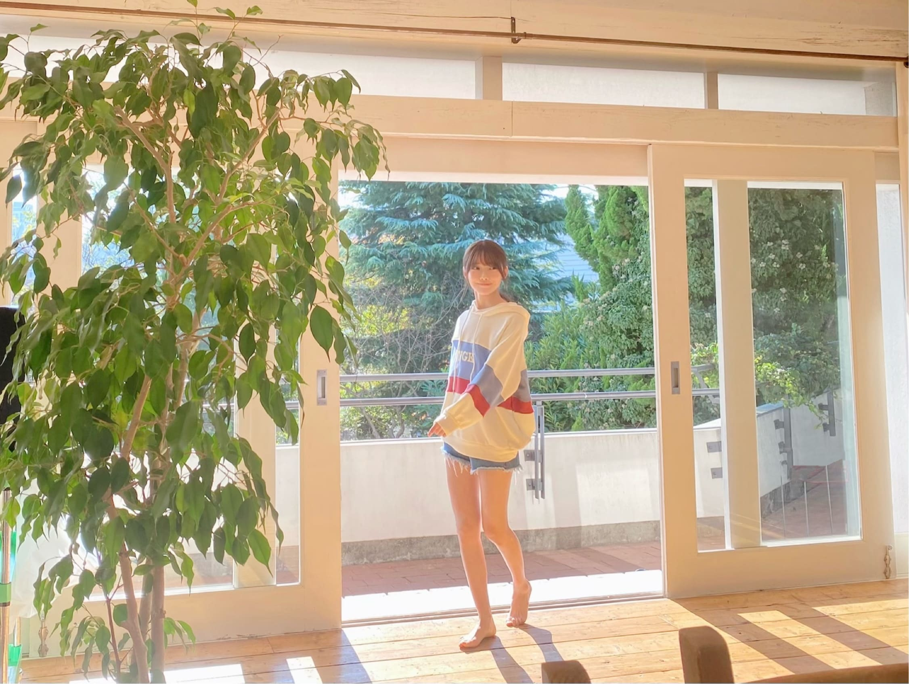
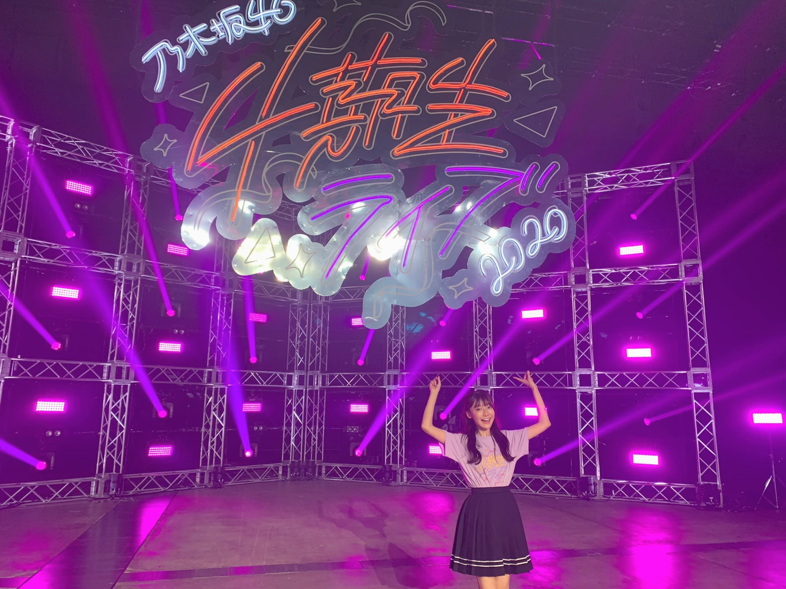

<?xml version="1.0" encoding="utf-8"?>
<!DOCTYPE html PUBLIC "-//W3C//DTD XHTML 1.0 Transitional//EN" "http://www.w3.org/TR/xhtml1/DTD/xhtml1-transitional.dtd">
<html xmlns="http://www.w3.org/1999/xhtml" lang="ja" xml:lang="ja" xmlns:og="http://ogp.me/ns#" xmlns:mixi="http://mixi-platform.com/ns#" xmlns:fb="http://www.facebook.com/2008/fbml">
<head>
<meta http-equiv="Content-Type" content="text/html; charset=utf-8" />
<meta http-equiv="Content-Style-Type" content="text/css" />
<meta http-equiv="Content-Script-Type" content="text/javascript" />
<meta http-equiv="Content-Language" content="ja" />
<meta name="robots" content="ALL" /><meta name="viewport" content="width=1024" />
<link href="https://blog.nogizaka46.com/shared.css?ver20200427" type="text/css" rel="stylesheet" media="screen,tv,print" />
<script type="text/javascript" src="https://blog.nogizaka46.com/js/prototype.js"></script>
<script type="text/javascript" src="https://blog.nogizaka46.com/js/ajaxCalendar.js"></script>
<script type="text/javascript" src="https://blog.nogizaka46.com/js/dayChecker.js"></script>
<script type="text/javascript" src="https://blog.nogizaka46.com/js/shared.js"></script>
<!--[if lte IE 6]>
<script type="text/javascript" src="../../../js/DD_belatedPNG_0.0.8a-min.js"></script>
<script type="text/javascript">DD_belatedPNG.fix("img,h2,.iepngfix");</script>
<![endif]-->
<meta name="description" xml:lang="ja" lang="ja" content="私たちには、超えなければならない目標がある！" />
<meta name="keywords" xml:lang="ja" lang="ja" content="新4期生リレー,乃木坂46,乃木坂,AKB48公式ライバル,AKB48,nogizaka46,nogizaka,乃木坂ってどこ,ぐるぐるカーテン,会いたかったかもしれない,左胸の勇気,乃木坂の詩,失いたくないから" />
<meta property="og:title" content="もうすぐ初めてのクリスマス ☺︎ 黒見明香(16) | 乃木坂46 新4期生リレー 公式ブログ" />
<link rel="alternate" type="application/atom+xml" title="Recent Entries" href="https://blog.nogizaka46.com/newfourth/atom.xml" />
<link rel="mixi-check-alternate" media="mixi-device-mobile" type="text/html" href="../../index.html" />
<link rel="mixi-check-alternate" media="mixi-device-smartphone" type="text/html" href="../../index.html" />
<title>もうすぐ初めてのクリスマス ☺︎ 黒見明香(16) | 乃木坂46 新4期生リレー 公式ブログ</title>
<link rel="prev bookmark" href="059056.php.html" title="レア☺︎弓木奈於" /><link rel="next bookmark" href="059070.php.html" title="真っ白な季節~。佐藤璃果" />
<style>:not(:lang(ja)) #comments-open {display: none;}
</style>
</head>
<body id="blog" class="memberindex" oncontextmenu="return false;">

<script type="text/javascript">

  var _gaq = _gaq || [];
  _gaq.push(['_setAccount', 'UA-573722-15']);
  _gaq.push(['_setDomainName', 'nogizaka46.com']);
  _gaq.push(['_trackPageview']);

  (function() {
    var ga = document.createElement('script'); ga.type = 'text/javascript'; ga.async = true;
    ga.src = ('https:' == document.location.protocol ? 'https://' : 'http://') + 'stats.g.doubleclick.net/dc.js';
    var s = document.getElementsByTagName('script')[0]; s.parentNode.insertBefore(ga, s);
  })();

</script>

<script>
  (function(i,s,o,g,r,a,m){i['GoogleAnalyticsObject']=r;i[r]=i[r]||function(){
  (i[r].q=i[r].q||[]).push(arguments)},i[r].l=1*new Date();a=s.createElement(o),
  m=s.getElementsByTagName(o)[0];a.async=1;a.src=g;m.parentNode.insertBefore(a,m)
  })(window,document,'script','//www.google-analytics.com/analytics.js','ga');
 
  ga('create', 'UA-66597974-1', 'auto');
  ga('send', 'pageview');

  ga('create', 'UA-98975839-1', 'auto' , 'myTracker' , {'sampleRate': 10});
  ga('myTracker.send', 'pageview');

</script>


<script src="https://j.wovn.io/1" data-wovnio="key=HQ9LiW" async></script>
<a id="pagetop" name="pagetop"></a>
<div id="container"><div class="w980">
<div id="head">
<div id="logo"><a href="http://www.nogizaka46.com/">乃木坂46 OFFICIAL WEB SITE</a></div><ul>
<li class="m1"><a href="http://www.nogizaka46.com/news/" onmouseover="ddmenu.over(1);" onmouseout="ddmenu.out(1);">ニュース</a>
<ul id="ddmenu1" onmouseover="ddmenu.over(1);" onmouseout="ddmenu.out(1);">
<li><a href="http://www.nogizaka46.com/news/">新着</a></li>
<li><a href="http://www.nogizaka46.com/news/media/">メディア</a></li>
<li><a href="http://www.nogizaka46.com/news/events/">イベント</a></li>
<li><a href="http://www.nogizaka46.com/news/releases/">リリース</a></li>
<li><a href="http://www.nogizaka46.com/news/etc/">その他</a></li>
</ul></li>
<li class="m10"><a href="http://www.nogizaka46.com/schedule/">スケジュール</a></li>
<li class="m2"><a href="http://www.nogizaka46.com/member/">メンバー紹介</a></li>
<li class="m3"><a href="http://www.nogizaka46.com/discography/">ディスコグラフィー</a></li>
<li class="m4"><a href="http://www.nogizaka46.com/event/">イベント</a></li>

<!--
<li class="m5"><a href="http://www.nogizaka46.com/tv/doko/" onmouseover="ddmenu.over(5);" onmouseout="ddmenu.out(5);">乃木坂って、どこ？</a>
<ul id="ddmenu5" onmouseover="ddmenu.over(5);" onmouseout="ddmenu.out(5);">
<li><a href="http://www.nogizaka46.com/tv/doko/">乃木坂って、どこ？</a></li>
<li><a href="http://www.nogizaka46.com/tv/koko/">乃木坂って、ここ？</a></li>
</ul></li>
</li>
-->

<li class="m6"><a href="http://www.nogizaka46.com/photo/">写真</a></li>
<li class="m7"><a href="http://www.nogizaka46.com/video/">動画</a></li>

<li class="m8"><a href="https://blog.nogizaka46.com/" onmouseover="ddmenu.over(8);" onmouseout="ddmenu.out(8);">ブログ</a>
<ul id="ddmenu8" onmouseover="ddmenu.over(8);" onmouseout="ddmenu.out(8);">
<li><a href="https://blog.nogizaka46.com/">メンバーブログ</a></li>
<li><a href="https://blog.nogizaka46.com/staff/">運営ブログ</a></li>
</ul></li>
<li class="m9"><a href="http://www.nogizaka46.com/info/n46mobile.php" onmouseover="ddmenu.over(9);" onmouseout="ddmenu.out(9);">乃木坂46mobile 会員制サイト</a>
<ul id="ddmenu9" onmouseover="ddmenu.over(9);" onmouseout="ddmenu.out(9);">
<li><a href="http://www.nogizaka46.com/info/n46mobile.php">乃木坂46 Mobile</a></li>
<li><a href="http://www.nogizaka46.com/info/n46mail.php">乃木坂46 Mail</a></li>
</ul></li>

</ul>
<div class="bnr"><!--<a href="URL"></a>--></div>
</div>
<div id="blogbody"><div id="bbin" class="clearfix">
<div class="left1">
<div id="blogmaintitle"  ><div><a href="../../index.html">新4期生リレー <span class="obl">OFFICIAL BLOG</span></a></div></div>

<div id="snsbtns">
<div id="snssheet" class="snsbtn"></div>
<div id="s1" class="snsbtn"><g:plusone size="tall" annotation="none"></g:plusone></div>
<div id="s2" class="snsbtn"><a href="http://b.hatena.ne.jp/entry/https://blog.nogizaka46.com/newfourth/2020/12/059061.php?cp=50" class="hatena-bookmark-button" data-hatena-bookmark-layout="standard" title="このエントリーをはてなブックマークに追加"></a><script type="text/javascript" src="https://b.st-hatena.com/js/bookmark_button.js" charset="utf-8" async="async"></script>
</div>
<div id="s3" class="snsbtn"><a href="http://www.facebook.com/sharer.php?u=http%3A%2F%2Fblog.nogizaka46.com%2Fnewfourth%2F2020%2F12%2F059061.php%3Fcp%3D50&amp;t=" target="_blank"></a>
</div>
<div id="s4" class="snsbtn"><a href="http://mixi.jp/share.pl" class="mixi-check-button" data-key="af2caa5489422ee95d01ca2b723af3dcaf7d393b"  data-url="https://blog.nogizaka46.com/newfourth/2020/12/059061.php?cp=50" data-button="button-2">Check</a><script type="text/javascript" src="https://static.mixi.jp/js/share.js"></script>
</div>
<div id="s5" class="snsbtn"><a href="https://twitter.com/share" class="twitter-share-button" data-url="https://blog.nogizaka46.com/newfourth/2020/12/059061.php?cp=50" data-lang="ja">ツイート</a><script>!function(d,s,id){var js,fjs=d.getElementsByTagName(s)[0];if(!d.getElementById(id)){js=d.createElement(s);js.id=id;js.src="//platform.twitter.com/widgets.js";fjs.parentNode.insertBefore(js,fjs);}}(document,"script","twitter-wjs");</script></div>
</div>

<div class="right2"><div class="right2in">

<div class="relnavi">
<a href="059056.php.html">&laquo; レア☺︎弓木奈於</a>｜<a href="../../index.html">新4期生リレーTOP</a>｜<a href="059070.php.html">真っ白な季節~。佐藤璃果 &raquo;</a></div>

<div id="sheet">
<h1 class="clearfix"><span class="date"><span class="yearmonth">2020/12</span><span class="daydate"><span class="dd1">13</span><span class="dd2">Sun</span></span></span><span class="heading"><span class="author">新4期生リレー</span><span class="entrytitle">もうすぐ初めてのクリスマス ☺︎ 黒見明香(16)</span></span></h1><div class="fkd"></div><div class="entrybody"><html><head><meta http-equiv="content-type" content="text/html; charset=utf-8"></head><body dir="auto"><div dir="ltr"><meta http-equiv="content-type" content="text/html; charset=utf-8"><div dir="ltr">ちゃんと伝わるかな・・？<div dir="ltr"><div dir="ltr"><div dir="ltr"><div dir="ltr"><div dir="ltr"><div dir="ltr"><div dir="ltr"><div dir="ltr"><div dir="ltr"><div dir="ltr"><div dir="ltr"><div dir="ltr"><div dir="ltr"><div dir="ltr"><div dir="ltr"><div dir="ltr"><div dir="ltr"><div dir="ltr"><div dir="ltr"><div dir="ltr"><div dir="ltr"><div dir="ltr"><div dir="ltr"><div dir="ltr">　<br></div><div dir="ltr">あなたに出逢えて、ほんとにありがとう。</div><div dir="ltr">　<br></div><div dir="ltr"><br><meta http-equiv="content-type" content="text/html; charset=utf-8"><div dir="ltr"><meta http-equiv="content-type" content="text/html; charset=utf-8"><div dir="ltr">今年もあと少しだよー！今週もお疲れ様でした✩︎⡱&nbsp;<div dir="ltr"><div dir="ltr"><div dir="ltr"><div dir="ltr"><div dir="ltr"><div dir="ltr"><div dir="ltr"><div dir="ltr"><div dir="ltr"><div dir="ltr"><div dir="ltr"><div dir="ltr"><div dir="ltr"><div dir="ltr"><div dir="ltr"><div dir="ltr"><span></span><br><span>ココを見つけてくださり ありがとうございます♪</span><br><span></span><br><span></span><br><span>乃木坂46 &nbsp;４期生の黒見明香です。</span><br><span></span><br><span>すこーしだけ自己紹介させてください☺︎</span><br><span></span><br><span>♪:*:･･:*:･･:*:･･:*:･･:*:･･:*:･♪:*:･･:*:･･:*:･･:*:･･:*:･･:*:･♪</span><br><span></span><br><span>黒見 明香（くろみ はるか）</span><br><span></span><br><span>2004年1月19日生まれ　16才</span><br><span></span><br><span>香港生まれ・東京都出身です</span><br><span></span><br><span>あだ名： くろみん・黒見ちゃん</span><br><span></span><br><span>3の倍数9・6・3(くろみ)</span><br><span></span><br><span>と覚えてもらえたら嬉しいです♪</span></div><div dir="ltr">　<br></div><div dir="ltr">　<br></div><div dir="ltr">頂いたコメントから↓</div><div dir="ltr">◎&nbsp;ヤンマガ見ました</div><div dir="ltr">靴下が破れてるとは思えないお嬢様のスマイルでしたね！ 笑</div><div dir="ltr">　<br></div><div dir="ltr">　<br></div><div dir="ltr">本当に・・・\(//∇//)\汗</div><div dir="ltr">　<br></div><div dir="ltr">　<br></div><div dir="ltr"><div dir="ltr">"たたみ"の楽屋で、靴を脱いで正座していたら、</div><div dir="ltr">　<br></div><div dir="ltr">マネージャーさんに、後ろから、</div><div dir="ltr">　<br></div><div dir="ltr">「くろみ、靴下穴空いてるよ・・？」</div><div dir="ltr">　<br></div><div dir="ltr">と指摘され・・・</div><div dir="ltr">　<br></div><div dir="ltr">びっくりして、みんなで転げながら大笑いして、</div><div dir="ltr">　<br></div><div dir="ltr">すごーく恥ずかしかったです。。。</div><div dir="ltr">　<br></div><div dir="ltr">　<br></div><div dir="ltr">カッコつけてても、なんか起きるのはナゼ！？笑</div><div dir="ltr">　<br></div><div dir="ltr">　<br></div><div dir="ltr">黒歴史エピソード☺︎笑↓</div></div><div dir="ltr"><a href="http://img.nogizaka46.com/blog/newfourth/2020/12/059000.php">https://blog.nogizaka46.com/newfourth/2020/12/059000.php</a></div><div dir="ltr">　<br></div><div dir="ltr">　<br></div><div dir="ltr">＊</div><div dir="ltr">　<br></div><div dir="ltr">◎靴下に穴が空いてたら、サンタさんがプレゼント入れられない</div><div dir="ltr">　<br></div><div dir="ltr">　<br></div><div dir="ltr">大変だ・・Σ（ﾟдﾟll）</div><div dir="ltr">　<br></div><div dir="ltr">　<br></div><div dir="ltr">そんな私に、スタッフさんが"クリスマスプレゼント"として下さった</div><div dir="ltr">　<br></div><div dir="ltr">「雪だるま柄」の靴下。</div><div dir="ltr">　<br></div><div dir="ltr">大切に飾って、12月24日を待ちたいなぁ。。と思ってるよ〜！</div><div dir="ltr">　<br></div><div dir="ltr">　<br></div><div dir="ltr">　<br></div><div dir="ltr">今年は、果たしてサンタさん来るかなぁー？笑</div><div dir="ltr">　<br></div><div dir="ltr">寒い季節だけど、皆んなのとこにも、</div><div dir="ltr">　<br></div><div dir="ltr">ホッとするあたたかい出来事が起きますように〜✨</div><div dir="ltr">　<br></div><div dir="ltr"><span>♪:*:･･:*:･･:*:･･:*:･･:*:･･:*:･♪:*:･･:*:･･:*:･･:*:･･:*:･･:*:･♪</span><br><span></span><br><span><br>-:-:୨୧:-:- &nbsp;大切な皆んなとの初めてのクリスマス♪ワクワクしてるよ〜☺︎</span></div><div dir="ltr"><span><br></span><br>【　感想をたくさん教えてくれてありがとう✨　】</div><div dir="ltr">　<br></div><div dir="ltr">　<br></div><div dir="ltr">4期生ライブ2020の感想を、本当にたくさん書いてくださってありがとう！</div><div dir="ltr">　<br></div><div dir="ltr">みんなの気持ちがまっすぐ伝わってきて、</div><div dir="ltr">　<br></div><div dir="ltr">涙したり笑ったりしながら</div><div dir="ltr">　<br></div><div dir="ltr">一つ一つ大切に読ませていただいているよー (*ˊᵕˋ*)੭&nbsp;</div><div dir="ltr">　<br></div><div dir="ltr">　<br></div><div dir="ltr">　<br></div><div dir="ltr">⚫︎一番苦戦したダンスはなんだった??</div><div dir="ltr">⚫︎ポピパッパパー、ダンスかっこよかった！　</div><div dir="ltr">　<br></div><div dir="ltr">先輩方の大切な曲で、カッコイイ楽曲なので、</div><div dir="ltr">　<br></div><div dir="ltr">未熟な私も...楽曲の世界観を邪魔しないよう、</div><div dir="ltr">　<br></div><div dir="ltr">染まれるようにと、家の鏡の前で必死で練習していました。</div><div dir="ltr">　<br></div><div dir="ltr">　<br></div><div dir="ltr">　<br></div><div dir="ltr">メンバーをよく見ていてくれるかっきー♡が気付いてくれて、</div><div dir="ltr">　<br></div><div dir="ltr">『ポピパッパパー良かったよー、よく頑張ったよ〜！』</div><div dir="ltr">　<br></div><div dir="ltr">と優しく声を掛けてくれて、すっごく嬉しかったです((〃ω〃))</div><div dir="ltr">　<br></div><div dir="ltr">　<br></div><div dir="ltr">＊</div><div dir="ltr">　<br></div><div dir="ltr">　<br></div><div dir="ltr">ダンサーの先生方にも、</div><div dir="ltr">　<br></div><div dir="ltr">「お姉さん達のように優雅に、美しくがまだ難しいのなら、</div><div dir="ltr">　<br></div><div dir="ltr">見てくださってる方々のために、乃木坂のために、</div><div dir="ltr">　<br></div><div dir="ltr">がむしゃらに汗かいて、全力で、笑顔で駆け抜けることが</div><div dir="ltr">　<br></div><div dir="ltr">今出来る一番のことだよ！」と教えていただいて、</div><div dir="ltr">　<br></div><div dir="ltr">　<br></div><div dir="ltr">　<br></div><div dir="ltr">乃木坂を支えてくださる皆さんが見てくださっていて、</div><div dir="ltr">　<br></div><div dir="ltr">拙い不出来なところはたくさんあったと思うのですが...</div><div dir="ltr">　<br></div><div dir="ltr">　<br></div><div dir="ltr">全力で！乃木坂が、楽曲が、皆さんが、大好きな気持ちが</div><div dir="ltr">　<br></div><div dir="ltr">伝わっていたら、嬉しいなぁ。。と思いました。</div><div dir="ltr">　<br></div><div dir="ltr">　<br></div><div dir="ltr">♬ *。♩*。♬</div><div dir="ltr">　<br></div><div dir="ltr">　<br></div><div dir="ltr">⚫︎ライブ中ずっと楽しそうにしていてこっちまで楽しくなりました！</div><div dir="ltr">ライブはやっぱり楽しかったですか？</div><div dir="ltr">　<br></div><div dir="ltr">　<br></div><div dir="ltr">乃木坂の楽曲も大好きなので、本当に幸せでした♡</div><div dir="ltr">　<br></div><div dir="ltr">インフルエンサーの歌も、トキトキメキメキのウインクも、</div><div dir="ltr">Threefold choiceのクリスマス姿も、、、</div><div dir="ltr">　<br></div><div dir="ltr">たくさん気付いてくださって本当にありがとう((〃ω〃))</div><div dir="ltr">　<br></div><div dir="ltr">　<br></div><div dir="ltr">⚫︎初めから16人だけど、訳あって5人が遅れて合流したと。5人がいつでも合流できるよう11人が道を作って手を伸ばしてくれたような。</div><div dir="ltr">⚫︎翌日のレコメンで4期生の黒見明香です！って、りかちゃんと名乗っていたので本当に泣きそうなぐらい良かったなと思いました。<br></div><div dir="ltr">　<br></div><div dir="ltr">　<br></div><div dir="ltr">もう4期生だね、おめでとうとお祝いして下さった皆んなも、</div><div dir="ltr">　<br></div><div dir="ltr">11人に並べるように、覚悟を持って努力してねと激励して下さった皆んなも、</div><div dir="ltr">　<br></div><div dir="ltr">本当にありがとう〜&gt;&lt;</div><div dir="ltr">　<br></div><div dir="ltr">　<br></div><div dir="ltr">こうして大切に4期生を育ててきてくれて</div><div dir="ltr">　<br></div><div dir="ltr">手を差し伸べて教えてくれた大好きなメンバーのことを</div><div dir="ltr">　<br></div><div dir="ltr">これからも見習って、力を合わせて</div><div dir="ltr">　<br></div><div dir="ltr">頑張って行きたいです！</div><div dir="ltr">　<br></div><div dir="ltr">どうぞ一緒に、坂を登ってくれたら嬉しいな (*ˊᵕˋ*)੭</div><div dir="ltr">　<br></div><div dir="ltr">一緒に、いっぱい幸せになろうねー☺︎♬</div><div dir="ltr">　<br></div><div dir="ltr">　<br></div><div dir="ltr">　<br></div><div dir="ltr">♬ *。♩*。♬</div><div dir="ltr">　<br></div><div dir="ltr"><br>⚫︎アフター配信で、フードを被せられるさくちゃんとフードをなんとしても被せたいくろみんの絡みも今回の見所の一つだったかな笑</div><div dir="ltr">　<br></div><div dir="ltr"><br>もこもこフードの『うさぎさくちゃん♡』が可愛すぎたので、</div><div dir="ltr">　<br></div><div dir="ltr">なんとしても見ていただかねばー！と思ったのですが、、、</div><div dir="ltr">　<br></div><div dir="ltr">マイク片手でなかなか苦戦していました\(//∇//)\</div><div dir="ltr"><br>またどこかで可愛いうさぎなさくちゃんが見れたらイイなぁ...✨<br><br><br>（*お仕事や事情で見れなくてごめんねというコメントも話し辛い事、教えてくれてありがとう- きっと遠くないうちに直接会える、見れる日が来るから謝らないでねー！お仕事・勉強みんな頑張ったねー、お疲れ様だよ〜 (*ˊᵕˋ*)੭ ）</div><div dir="ltr">　<br></div><div dir="ltr">♪:*:･･:*:･･:*:･･:*:･･:*:･･:*:･♪:*:･･:*:･･:*:･･:*:･･:*:･･:*:･♪</div><div dir="ltr"><span><span></span><br><br>-:-:୨୧:-:- &nbsp;ストッパーで『停まってる自転車』の上でおっかなびっくり... いつものワンパターンWピースだよ〜\(//∇//)\ 果して乗れるのだろうか・・・<br><br></span><br></div><div dir="ltr">【　乃木坂46山崎怜奈とおはつちゃん</div><div dir="ltr">　＃17 『自転車に乗りたい！』　】</div><div dir="ltr">　<br></div><div dir="ltr">⚫︎19日の、おはつちゃん。くろみん自転車に乗れたかな？<br>⚫︎くろみん初ロケでしかも１人ってことだよね？？</div><div dir="ltr">　<br></div><div dir="ltr">そうなのですー！</div><div dir="ltr">　<br></div><div dir="ltr">来週は運動神経が悪く、憧れでコンプレックスだった、</div><div dir="ltr">　<br></div><div dir="ltr">＜自転車チャレンジ＞が放送されます〜 (*ˊᵕˋ*)੭&nbsp;</div><div dir="ltr">　<br></div><div dir="ltr">初めてのロケ、初めての1人挑戦になります✨</div><div dir="ltr">　<br></div><div dir="ltr">◎ひかり TV・dTVチャンネルにて</div><div dir="ltr">12月19日(土)22:00〜22:30 放送だよ〜</div><div dir="ltr">　<br></div><div dir="ltr"><br>先日も、幼稚園の子に</div><div dir="ltr">　<br></div><div dir="ltr">「......あのお姉ちゃん、大丈夫？( ꒪⌓︎꒪) 」と</div><div dir="ltr">　<br></div><div dir="ltr">ポカンと心配されていた私。。。ぜひご期待！？くださいね☺︎</div><div dir="ltr">　<br></div><div dir="ltr"><div dir="ltr">　<br></div><div dir="ltr">　<br></div><div dir="ltr">♬ *。♩*。♬</div><div dir="ltr"><div dir="ltr"><div dir="ltr"><div dir="ltr">　<br></div><div dir="ltr">　<br></div></div><div dir="ltr">⚫︎伊藤純奈先輩の「のぎおび」「陰ながら応援している、なかなか話しかけられないけど、かわいいい」。一生懸命さに「ほっとけない」存在なんですって‥‥。<br></div><div dir="ltr">　<br></div><div dir="ltr">大切な先輩方に心配かけすぎていて申し訳ないです｡ﾟ(｡ﾉω＼｡)ﾟ｡</div><div dir="ltr">　<br></div><div dir="ltr">それと共に、憧れの純奈さん♡をはじめ、</div><div dir="ltr">　<br></div><div dir="ltr">乃木坂の先輩方は、優しく見守って下さっていて、</div><div dir="ltr">　<br></div><div dir="ltr">落ち込んだ時に、そっと寄り添って下さる温かさに</div><div dir="ltr">　<br></div><div dir="ltr">新しいことを体験する毎に、</div><div dir="ltr">　<br></div><div dir="ltr">感動して、胸が熱くなってしまいます。</div><div dir="ltr">　<br></div><div dir="ltr">＊</div><div dir="ltr">　<br></div><div dir="ltr">私もいつか、大好きな先輩方のように</div><div dir="ltr">　<br></div><div dir="ltr">皆さんが落ち込んだり元気がない時に、</div><div dir="ltr">　<br></div><div dir="ltr">寄り添えるよう、少しでも元気をくれるように</div><div dir="ltr">　<br></div><div dir="ltr">そんな"乃木坂らしさ"を身につけられるよう</div><div dir="ltr">　<br></div><div dir="ltr">先輩方を見習って精一杯頑張りたいです。</div><div dir="ltr">　<br></div><div dir="ltr">　<br></div><div dir="ltr">　<br></div><div dir="ltr">22歳の純奈さんも美しくて眩しいですよね((〃ω〃))</div><div dir="ltr">　<br></div><div dir="ltr">純奈さんの目が大好きです✨</div><div dir="ltr">　<br></div><div dir="ltr">　<br></div><div dir="ltr">　<br></div><div dir="ltr">♬ *。♩*。♬<br><br><br></div><div dir="ltr">【　オンライン ミート＆グリート♡（個別トーク会）】</div><div dir="ltr">　<br></div><div dir="ltr">　<br></div><div dir="ltr"><div dir="ltr">⚫︎今からミーグリが楽しみで楽しみで。どんな髪型で、どんなファッションで迎えてくれるんだろう。早く会いたいな。</div><div>　<br></div><div>わたしもやっと！皆んなと初めてお話できるのが</div><div>　<br></div><div>すっごく楽しみで、今から"こんな格好しようかな〜" "あのお話しようかなー！"と</div><div>　<br></div><div>たくさん想像して、心待ちにしてるんだよー✩︎⡱&nbsp;</div><div>　<br></div><div>　<br></div></div><div dir="ltr">　<br></div><div dir="ltr">⚫︎らじらー！で発明した『クロミーアキャット』は今後の握手会でどのように使う？</div><div dir="ltr">　<br></div><div dir="ltr">　<br></div><div dir="ltr">会ってのお・た・の・し・み笑なのだけど...<br><br>らじらー！で皆んなで決めてもらった必殺技も<br><br>上手に決められるよう、こっそり秘練習していくね〜☺︎</div><div dir="ltr">　<br></div><div dir="ltr">皆もいっぱい覚えるねヾ(･ω･*)o</div><div dir="ltr">　<br></div><div dir="ltr">　<br></div><div dir="ltr"><br>"いついつ当選したよー！"と教えてくれてるのもありがとう！<br></div><div dir="ltr">　<br></div><div dir="ltr">すっごく楽しみです((〃ω〃))</div><div dir="ltr">　<br></div><div dir="ltr">本当に！「やっと、会えたね」だね✨</div><div dir="ltr">　<br></div><div dir="ltr">　<br></div><div dir="ltr">♪:*:･･:*:･･:*:･･:*:･･:*:･･:*:･♪:*:･･:*:･･:*:･･:*:･･:*:･･:*:･♪</div></div></div></div><div dir="ltr"><span><br><br>-:-:୨୧:-:- ヤングマガジンさんのオフショット✩︎⡱ 白いワンピースと、おっきなパーカーの２種類着させていただいたよ〜☺︎</span></div><div dir="ltr"><span><span><br></span></span></div><div dir="ltr"><span><span><br></span></span></div><div dir="ltr"><span><span>【　週刊ヤングマガジンNo.2・3号 </span><br><span>　乃木坂46スペシャルグラビアジャック 】</span></span></div><div dir="ltr"><span><br></span></div><div dir="ltr">発売中のヤングマガジンさんに、表紙の齋藤飛鳥さん♡</div><div dir="ltr">　<br></div><div dir="ltr">寺田蘭世さん♡ 佐藤楓さん♡ 金川紗耶ちゃん♡と共に、</div><div dir="ltr">　<br></div><div dir="ltr">巻末グラビアとして、５人で登場させて頂いています〜</div><div dir="ltr"><br><span><span></span><br></span>⚫︎パーカーで、髪を後ろに結んでいるのが好き!</div><div dir="ltr">　<br></div><div dir="ltr">ありがとうー！オフショットも載せさせてね〜</div><div dir="ltr">　<br></div><div dir="ltr">パーカーで遊んでるアホな写真も撮ってもらってたので、</div><div dir="ltr">　<br></div><div dir="ltr">また次回オフショット番外編も！？</div><div dir="ltr">　<br></div><div dir="ltr">よかったら見てくれたら嬉しいな〜☺︎笑</div><div dir="ltr">　<br></div><div dir="ltr">　<br></div><div dir="ltr"><span><span>＊</span><br><br></span></div><div dir="ltr"></div><div dir="ltr"></div><div dir="ltr"></div><div dir="ltr"></div><div dir="ltr"></div><div dir="ltr"></div><div dir="ltr"><span style="-webkit-tap-highlight-color: rgba(0, 0, 0, 0);">⚫︎ヤンマガ、プレゼントの</span>チェキはダブルピースなんですね。笑 欲しいなぁ。</div><div dir="ltr">　<br></div><div dir="ltr">チェックして下さってありがとう(*´-`)</div><div dir="ltr">　<br></div><div dir="ltr">気持ちを込めてWピースしてるので</div><div dir="ltr">　<br></div><div dir="ltr">見てくださってるあなたに届くといいなぁ〜♡</div><div dir="ltr">　<br></div><div dir="ltr">　<br></div><div dir="ltr">　<br></div><div dir="ltr">♬ *。♩*。♬<br><br></div><div dir="ltr"><div dir="ltr">　<br></div><div dir="ltr">【　4期生ライブ2020・番外編☺︎　】</div><div dir="ltr">　<br></div><div dir="ltr"><br>⚫︎公約のＷピース見つけたよ！緊張していたと思うのに私たちの事忘れずにいてくれて本当に嬉しかった！<br>⚫︎気づけなかった!?もーくろみん〜〜難しいよ！</div><div dir="ltr">　<br></div><div dir="ltr">むずかしかったよねー！ごめんねー\(//∇//)\</div><div dir="ltr">もちろん、もちろん！ライブ中も、トナカイの映像撮る時にもいつも心に一緒にココの皆んなが居たんだよ〜！</div><div dir="ltr">　<br></div><div dir="ltr">リクエスト頂いたライブでの公約のお話はココだよー☺︎↓</div><div dir="ltr"><a href="http://img.nogizaka46.com/blog/newfourth/?d=20201203">https://blog.nogizaka46.com/newfourth/?d=20201203</a></div><div dir="ltr">　<br></div><div dir="ltr"><br>⚫︎「I see...」終わり、はける時にもしてた様に見えてしまいました(笑)</div><div dir="ltr"><br>映ってたか自信なかったのだけど、見つけてくれて皆んなありがとうー！</div><div dir="ltr">『963レア賞』を差し上げますヾ(･ω･*)o笑<br><div dir="ltr"><br>♬ *。♩*。♬</div><div dir="ltr">　<br></div><div dir="ltr"><div dir="ltr">＜ちょこっと裏話！？笑＞</div><div dir="ltr">　<br></div><div dir="ltr">⚫︎4期生ライブでのエピソードはありますか？あったら、教えてください！</div><div dir="ltr">⚫︎図書室の君への所でみんな急いで移動していたね。<br><br><br>実は・・・</div><div dir="ltr">　<br></div><div dir="ltr">「配信ライブ」ならではの、</div><div dir="ltr">　<br></div><div dir="ltr"><div dir="ltr">①メインステージ</div><div dir="ltr">②ダンスステージ</div><div dir="ltr">③イルミネーションステージ</div><div dir="ltr">④"NOGIROOM"ステージ</div><div dir="ltr">　<br></div><div dir="ltr">と、４つのステージと、</div><div dir="ltr">　<br></div><div dir="ltr">会場を広く使っていたので、</div><div dir="ltr">　<br></div><div dir="ltr">ダンサーの先生から</div><div dir="ltr">　<br></div><div dir="ltr">『　体感 5 0メートル 13秒くらいで！　』</div><div dir="ltr">　<br></div><div dir="ltr">とご指導があり、</div><div dir="ltr">　<br></div><div dir="ltr">運動神経が悪く、かけっこ毎年ビリの私は...</div><div dir="ltr">　<br></div><div dir="ltr">"こ、これは体育のテスト位の本気ダッシュだ( ꒪⌓︎꒪)"</div><div dir="ltr">　<br></div><div dir="ltr">と、一番心配していました。。。汗</div><div dir="ltr">　<br></div><div dir="ltr">＊</div><div dir="ltr">　<br></div><div dir="ltr">図書室から手裏剣に移動する時は</div><div dir="ltr">　<br></div><div dir="ltr">「くろみ最後(遅っ)！弓木ちゃん先通してー！」</div><div dir="ltr">　<br></div><div dir="ltr">　<br></div><div dir="ltr">トキメキで後ろから出てくるところは</div><div dir="ltr">　<br></div></div><div dir="ltr">レイちゃんは余裕で楽しく出てこれるのですが、</div><div dir="ltr"><br>私は間に合わないので、必死で猛ダッシュε==(.≧ω≦)っ</div><div dir="ltr">　<br></div><div dir="ltr"><br>I see...の一番終わりも、全力ダッシュ斜めに列になんとかイン</div><div dir="ltr">　<br></div><div dir="ltr">　<br></div><div dir="ltr">・・・と、たびたび全力で走っていました\(//∇//)\笑</div><div dir="ltr">　<br></div><div dir="ltr">　<br></div><div dir="ltr">＊</div><div dir="ltr">　<br></div><div dir="ltr">これからに備えて、筋トレや走り込みをせねば。。。</div><div dir="ltr">　<br></div><div dir="ltr">と反省しながら、必死でヒールで、</div><div dir="ltr">　<br></div><div dir="ltr">ステージ間を全速力ダッシュしていました。。( ˙-˙ ; )ふふ</div><div>　<br></div><div>　<br></div></div></div></div><div dir="ltr">♪:*:･･:*:･･:*:･･:*:･･:*:･･:*:･♪:*:･･:*:･･:*:･･:*:･･:*:･･:*:･♪</div><div dir="ltr"><div dir="ltr"><div dir="ltr"><div dir="ltr">　<br></div><div dir="ltr"><br></div><div dir="ltr" style="-webkit-text-size-adjust: auto;">-:-:୨୧:-:- この日のための、4期生ライブロゴ、看板も大切な想い出となりました〜✩︎⡱&nbsp;</div><div dir="ltr" style="-webkit-text-size-adjust: auto;">　<br></div><div dir="ltr" style="-webkit-text-size-adjust: auto;">　<br></div><div dir="ltr" style="-webkit-text-size-adjust: auto;">【　文化放送「レコメン!」 乃木坂 4 期生・メガ盛り祭り✨　】</div><div dir="ltr" style="-webkit-text-size-adjust: auto;">　<br></div><div dir="ltr" style="-webkit-text-size-adjust: auto;"><div dir="ltr" style="-webkit-text-size-adjust: none;">　<br></div><div dir="ltr" style="-webkit-text-size-adjust: none;">⚫︎レコメンで言ってた、まゆちゃんのお尻を殴ったのは気が付かなかったな(笑)</div><div dir="ltr" style="-webkit-text-size-adjust: none;">⚫︎「私にとってのパーティはお仕事の現場」、ナイスな返しで爆笑したよ！<br><br>まゆたん♡とごめんね合戦になっちゃった後日談まで</div><div dir="ltr" style="-webkit-text-size-adjust: none;">　<br></div><div dir="ltr" style="-webkit-text-size-adjust: none;">お話してくれて、優しくてありがたかったよー\(//∇//)\</div><div dir="ltr" style="-webkit-text-size-adjust: none;">　<br></div><div dir="ltr" style="-webkit-text-size-adjust: none;">マイクがまゆたんのお尻にストレートに入ってしまって...</div><div dir="ltr" style="-webkit-text-size-adjust: none;">　<br></div><div dir="ltr" style="-webkit-text-size-adjust: none;">本当に反省です。。</div><div dir="ltr" style="-webkit-text-size-adjust: none;">　<br></div><div dir="ltr" style="-webkit-text-size-adjust: none;">＊</div><div dir="ltr" style="-webkit-text-size-adjust: none;">　<br></div><div dir="ltr" style="-webkit-text-size-adjust: none;">そして、お仕事の現場は、皆んなと</div><div dir="ltr" style="-webkit-text-size-adjust: none;">　<br></div><div dir="ltr" style="-webkit-text-size-adjust: none;">楽曲や番組を通じて、コミュニケーションできるから</div><div dir="ltr" style="-webkit-text-size-adjust: none;">　<br></div><div dir="ltr" style="-webkit-text-size-adjust: none;">やっぱり"パーティ"一番楽しみにしてる嬉しい場所だなーって</div><div dir="ltr" style="-webkit-text-size-adjust: none;">　<br></div><div dir="ltr" style="-webkit-text-size-adjust: none;">感じています。</div><div dir="ltr" style="-webkit-text-size-adjust: none;">　<br></div><div dir="ltr" style="-webkit-text-size-adjust: none;">たくさんのコメントやメッセージも本当にありがとうございます!!</div><div dir="ltr" style="-webkit-text-size-adjust: none;">　<br></div><div dir="ltr" style="-webkit-text-size-adjust: none;"><br><br></div></div><div dir="ltr" style="-webkit-text-size-adjust: auto;"></div></div></div><div dir="ltr" style="-webkit-text-size-adjust: auto;">引き続き明日からも・・・22:00〜</div><div dir="ltr" style="-webkit-text-size-adjust: auto;"><br><div dir="ltr"><div dir="ltr">12月14日　賀喜遥香、北川悠理</div><div dir="ltr">12月15日　遠藤さくら、早川聖来</div><div dir="ltr">12月16日　田村真佑、金川紗耶、弓木奈於</div></div><div dir="ltr">　<br></div><div dir="ltr">のメンバーで出演させて頂きます！（ちゃん略です☺︎）</div><div dir="ltr">　<br></div><div dir="ltr">是非楽しみにしててくださいね〜！</div></div><div dir="ltr"><div dir="ltr"><div dir="ltr"><div dir="ltr" style="-webkit-text-size-adjust: auto;">　<br></div><div dir="ltr" style="-webkit-text-size-adjust: auto;">　<br></div><div dir="ltr" style="-webkit-text-size-adjust: auto;"><div dir="ltr">♬ *。♩*。♬</div><div dir="ltr">　<br></div><div dir="ltr"><div dir="ltr" style="-webkit-text-size-adjust: none;">【ノギザカスキッツ ACT2】</div><div dir="ltr" style="-webkit-text-size-adjust: none;">　<br></div><div dir="ltr" style="-webkit-text-size-adjust: none;">⚫︎くろみんが来週の予告に出ててコントに初登場だね！あの感じだとあのコントかな...？？</div><div dir="ltr" style="-webkit-text-size-adjust: none;">　<br></div><div dir="ltr" style="-webkit-text-size-adjust: none;"><div dir="ltr">「しりとれ！HIP CATCH PARTY！②」</div><div>　<br></div><div>楽しく、いっぱい笑顔になりながら、参加させて頂いてます〜</div><div>　<br></div><div>どんな風に仕上がってるかなぁ。。わたしもドキドキです(*´-`)笑</div></div><div dir="ltr" style="-webkit-text-size-adjust: none;">　<br></div><div dir="ltr" style="-webkit-text-size-adjust: none;">　<br></div><div dir="ltr" style="-webkit-text-size-adjust: none;">藤森慎吾さんとの「照負倶楽部」の華麗なチャイナドレス姿も楽しみですね〜✨</div><div dir="ltr" style="-webkit-text-size-adjust: none;">　<br></div><div dir="ltr" style="-webkit-text-size-adjust: none;">毎週火曜午前1:29〜、どうぞお楽しみに☺︎</div><div dir="ltr" style="-webkit-text-size-adjust: none;">　<br></div><div>　<br></div><div>♬ *。♩*。♬</div></div></div><div dir="ltr" style="-webkit-text-size-adjust: auto;">　<br></div><div dir="ltr" style="-webkit-text-size-adjust: auto;">　<br></div><div dir="ltr" style="-webkit-text-size-adjust: auto;">【　乃木坂46 アンダーライブ 2020✩︎⡱ &nbsp;】</div><div dir="ltr" style="-webkit-text-size-adjust: auto;">　<br></div><div dir="ltr" style="-webkit-text-size-adjust: auto;"><span style="-webkit-text-size-adjust: none;">⚫︎アンダーライブ</span><span style="-webkit-text-size-adjust: none;">に人と行くことになりました!</span><span style="-webkit-text-size-adjust: none;">スティックバルーンの特典があるそうで、</span><span style="-webkit-text-size-adjust: none;">野球の応援みたいで楽しそう(笑)</span></div><div dir="ltr" style="-webkit-text-size-adjust: auto;"><span style="-webkit-text-size-adjust: none;"><br></span></div><div dir="ltr">スティックバルーン楽しみですよねー！</div><div dir="ltr">久々の有観客でのライブ✨</div><div dir="ltr" style="-webkit-text-size-adjust: auto;">　<br></div><div dir="ltr" style="-webkit-text-size-adjust: auto;">ライブ配信もされるので、是非是非楽しんでくださいね！</div><div dir="ltr" style="-webkit-text-size-adjust: auto;">　<br></div><div dir="ltr" style="-webkit-text-size-adjust: auto;"> ① 12月18日(金)　　開場 16:30 ／ 開演 18:00 　《ライブ配信予定》 </div><div dir="ltr" style="-webkit-text-size-adjust: auto;"> ② 12月19日(土)　　開場 16:30 ／ 開演 18:00 　《ライブ配信予定》 </div><div dir="ltr" style="-webkit-text-size-adjust: auto;"> ③ 12月20日(日)　　開場 16:30 ／ 開演 18:00 　《ライブ配信予定》 </div></div></div><div dir="ltr" style="-webkit-text-size-adjust: auto;">　<br></div><div dir="ltr" style="-webkit-text-size-adjust: auto;">もちろん、わたしも観ますよー!!</div><div dir="ltr" style="-webkit-text-size-adjust: auto;">純奈さん♡もおっしゃってた『熱いアンダーライブ』</div><div dir="ltr" style="-webkit-text-size-adjust: auto;">一緒に盛り上がりましょうね〜 (*ˊᵕˋ*)੭&nbsp;</div></div><span><span></span><div dir="ltr">　<br></div><div dir="ltr"><br>♬ *。♩*。♬<br><br>⚫︎8th YEAR BIRTHDAY LIVEの特典映像予告編が公開されてたね。研修生時代の白いゼッケンを付けたくろみんたちも映ってたね。表情からは緊張感が伝わってきます。</div><div dir="ltr">◯本当に緊張しました。先輩方、スタッフの皆さんにたくさん助けられました。合計200曲の涙と幸せの詰まっている作品、12/23発売です☺︎</div><div dir="ltr">　<br></div><div dir="ltr">懐かしの名古屋ドームでのエピソード↓</div><div dir="ltr"><a href="../../smph/2020/05/056295.php.html">https://blog.nogizaka46.com/newfourth/smph/2020/05/056295.php</a></div><div dir="ltr">　<br></div><div dir="ltr">　<br></div></span>⚫︎クリスマスの個別生写真買ったから今から届くの凄く楽しみ！！</div><div dir="ltr">◯ありがとうー！レアな緑のサンタさん衣装を着ているので、どうぞ一緒にクリスマス気分を味わえたら嬉しいな〜ヾ(･ω･*)o</div><div dir="ltr">　<br></div><div dir="ltr"><span><span>♪:*:･･:*:･･:*:･･:*:･･:*:･･:*:･♪:*:･･:*:･･:*:･･:*:･･:*:･･:*:･♪</span><br><span></span><br><span></span><br><span></span><br><span>ブログやお手紙で、たくさんのコメントや感想送って下さり</span><br><span></span><br><span>本当にありがとうございます✩︎⡱ </span><br><span></span><br><span></span><br><span></span><br><span>恥ずかしくて、実は初コメントなんだーというあなたも、</span><br><span></span><br><span>こないだの続きのお話を教えてくださるあなたも、</span><br><span></span><br><span>大切な時間を使ってお話しして下さり</span><br><span></span><br><span>本当にありがとうございます✨ </span><br><span></span><br><span></span><br><span></span><br><span>あなたに出逢えた奇跡に、感謝しながら、</span><br><span></span><br><span>大事に、一つずつ全部読ませて頂いています((〃ω〃))</span><br><span></span><br><span></span><br><span></span><br><span>皆さんのことを知ることが出来る、</span><br><span></span><br><span>私の１日の中で『１番幸せな時間』です♩</span><br><span></span><br><span></span><br><span></span><br><span>いよいよ１月から！初めての個別トーク会で、</span><br><span></span><br><span>直接お話しできる時が、 今からとっても待ち遠しいです✩︎⡱ </span><br><span></span><br><span></span><br><span>＊</span><br><span></span><br><span>いよいよ年末が近付いてきて、仕事や勉強が忙しかったり、</span><br><span></span><br><span>なんだか体調イマイチだよー、疲れちゃったよーって方も</span><br><span></span><br><span>本当に、お疲れ様でした✩︎⡱ </span><br><span></span><br><span></span><br><span>きっと心も、身体も、しんどい時もあるかと思います。。</span><br><span></span><br><span></span><br><span></span><br><span>どうぞ、皆さんが 少しでも</span><br><span></span><br><span>ひとときリラックスできますように...✩︎⡱ </span><br><span></span><br><span>と願っています(*´-`)</span><br><span></span><br><span></span><br><span>初めて会える日を、楽しみに待っています♪</span><br><span></span><br><span></span><br><span>＊</span><br><span></span><br><span></span><br><span>明日は、いっぱい歩いただけで褒めてくれる</span></span></div><div dir="ltr"><span><span><br></span></span></div><div dir="ltr"><span><span>優しいお姉さん、璃果ちゃんですよ〜♬</span><br><span></span><br><span></span><br><span>読んでくださり、本当にありがとうございます☺︎</span><br><span></span><br><span>次回も、会えたら嬉しいなぁ✨</span><br><span></span><br><span></span><br><span></span><br><span></span><br><span></span><br><span>またねヾ(･ω･*)</span><br><span></span><br><span></span><br><span>くろみはるか☺︎</span><br><span></span><br><span></span><br><span>☆ 明日のあなたのラッキーナンバー：❷　と　❺</span><br><span></span><br><span>♪:*:･･:*:･･:*:･･:*:･･:*:･･:*:･♪:*:･･:*:･･:*:･･:*:･･:*:･･:*:･♪</span><br><span></span><br><span></span><br><span></span><br><span>・</span><br><span>・</span><br><span>・</span><br><span></span><br><span></span><br><span>＜ちょこっとアンコール♬笑＞</span><br><span></span><br><span>〜クロミ・ル・フィーユ〜</span><br><span>（クロ見るFeel YOU☺︎）</span></span></div><div dir="ltr"><span><br></span></div><div dir="ltr"><span><br></span></div><div dir="ltr"><span>２回分なので、長いよ〜汗</span></div><div dir="ltr"><span>楽屋でおしゃべりしてる感じなので、</span></div><div dir="ltr"><span>どうぞお時間のある時にでも、</span></div><div dir="ltr"><span>覗いてみてねっ (*ˊᵕˋ*)੭✨<br></span></div><div dir="ltr"><span><br></span></div><div dir="ltr"><span><br></span></div><div dir="ltr"><div dir="ltr">♬ *。♩*。♬<br><br><br>⚫︎生誕グッズ、野球のユニフォームを意識したデザインのシャツいいね。アイドルとファンはお互いを応援しあって絆を深めていく。まさに応援のキャッチボール。<br><br>◯「応援のキャッチボール」素敵な言葉ですね〜 (*ˊᵕˋ*)੭&nbsp;</div><div dir="ltr">いつも私の下手なボール、投げ返してくれて、ありがとうー!!<br><br><br>♬ *。♩*。♬<br><br><br>⚫︎次回ブログは来年の抱負を聞きたいです<br>◯じっくり考えて、もう少しだけ後のブログに書かせてねヾ(･ω･*)o<br><br>⚫︎クリスマスプレゼントを貰うなら何が欲しいですか?<br>◯向井葉月さん♡とゲームでフレンドになりたくって、頑張って貯めてるの〜、少しでも早く目標に近付けるようおもちゃ券かなぁ...笑</div><div dir="ltr">　<br></div><div dir="ltr">なんてダメな気がするので、大事な皆んながクリスマス寂しくないといいなぁ。。て思ってるよー！クリスマスもコメント読んだり、心を一緒に過ごしたいな〜♬</div><div dir="ltr">　<br></div><div dir="ltr">　<br></div><div dir="ltr">♬ *。♩*。♬</div><div dir="ltr">　<br></div><div dir="ltr"><br>大切な皆んなのお名前アイディア、<br>引き続き寄せてくれてありがとう〜ヾ(･ω･*)o<br><br>天才すぎて、迷い始めたよー☺︎笑<br>教えてくれてありがとう！<br><br>⚫︎クロワッサン&nbsp;<br>クロ ： くろみんに<br>ワッ ： ワッイワイと<br>サン ： 参加をする<br><br>⚫︎ クロミナール、ナルちゃん<br><br>⚫︎ 『ネロ』イタリア語で『黒』<br><br>⚫︎ 『黒子(ｸﾛｺ)さん達』<br><br></div><div dir="ltr">　<br></div><div dir="ltr">　<br></div></div><div dir="ltr">♬ *。♩*。♬</div><div dir="ltr">　<br></div><div dir="ltr">　<br></div><div dir="ltr">⚫︎くろみんのダブルピース！を真似して？最近ダブルピースするようになっちゃいました！笑<br>◯お揃い！嬉しいねーヾ(･ω･*)o<br><br>⚫︎トゥエルブ黒林、カタカナにスペルって言い方使う人初めて見たかも(笑)<br>◯ホントだ！カタカナはスペルじゃないよね汗<br>なんだろう。。。カタカナ書き順？むずかしいね\(//∇//)\笑<br><br>⚫︎部活で注意ができないんですって相談したの覚えてますか？それが最近注意、できるようになったんです......!<br>◯勇気出してすごいね！一歩進めてわたしも嬉しいよー&gt;&lt;</div><div dir="ltr">　<br></div><div dir="ltr">　<br></div><div dir="ltr">♬ *。♩*。♬</div><div dir="ltr">　<br></div><div dir="ltr"><div dir="ltr">　<br></div><div dir="ltr">＜ゲームコーナー☺︎笑＞</div><div dir="ltr">　<br></div><div dir="ltr">⚫︎ プロスピ交換会今の段階欲しい選手手に入った？</div><div dir="ltr">◯手に入ってないよ〜</div><div dir="ltr">欲しい選手が手に入りますように！</div><div dir="ltr">　<br></div><div dir="ltr">⚫︎ 最近はプロスピばっかりしてて勉強全然できません笑</div><div dir="ltr">◯プロスピも大事だけど勉強も自分にとって大事だからがんばってね☺︎</div><div dir="ltr">（わたしもだよね\(//∇//)\汗）</div><div dir="ltr">　<br></div><div dir="ltr">⚫︎ あっプロスピの質問なんだけども、キャプテン誰にしてる？</div><div dir="ltr">◯今はキャプテンをSの極みプラスの海外で活躍なさってるピッチャーにしてるよ〜</div><div dir="ltr">　<br></div><div dir="ltr">⚫︎ くろみんは今リーグオーダーいくつ？</div><div dir="ltr">◯今はリーグオーダー72000くらいだよ〜</div><div dir="ltr">　<br></div><div dir="ltr">⚫︎ プロスピ最近リアタイ少しやっててプラチナランクには行けました！</div><div dir="ltr">◯プラチナランクおめでとう！</div><div dir="ltr">リアタイ最近やってないからまたやろうかな〜</div><div dir="ltr">　<br></div><div dir="ltr">⚫︎ 最近プロスピで当たった選手は誰ですか？</div><div dir="ltr">◯ポジションがライトの選手だよ〜</div><div dir="ltr">　<br></div><div dir="ltr">⚫︎ 正月スカウト、ワールドスター、OBとか引きたいのが多すぎてエナジー足りない笑</div><div dir="ltr">俺も頑張ってエナジー貯めるね</div><div dir="ltr">◯私も頑張って貯めようと思ってるよ！</div><div dir="ltr">一緒に頑張ろうね☺︎</div><div dir="ltr">　<br></div><div dir="ltr">⚫︎プロスピ交流戦やってますか？</div><div dir="ltr">◯うん！やってるよ〜</div><div dir="ltr">今の所1位だよ☺︎</div><div dir="ltr">　<br></div><div dir="ltr">⚫︎プロスピ交流戦リーグレベルSに入りました。</div><div dir="ltr">◯すごいね！！私はリーグレベルEだよ！</div><div dir="ltr">いつかS行けるように頑張る☺︎</div><div dir="ltr">　<br></div><div dir="ltr">⚫︎ ブログ見てて思い出したけど私も乃木フェス入賞しました！もちろんくろみん枠で！</div><div dir="ltr">◯乃木フェス入賞おめでとう！そしてありがとう☺︎嬉しいな！</div><div dir="ltr">　<br></div><div dir="ltr">⚫︎ 乃木恋の彼氏イベント、、</div><div dir="ltr">わたし、気づくの遅くて全然順位上位に入れなかった...</div><div dir="ltr">もう少し、頑張ってたら、彼氏確定枠に入れてたのに...</div><div dir="ltr">次は頑張ろ...</div><div dir="ltr">◯イベントに気づいてくれてありがとう☺︎次また報告も待ってるね！</div><div dir="ltr">　<br></div><div dir="ltr">⚫︎ 乃木恋の彼氏イベントで黒見ちゃんレーン2位になる事が出来ました。次は1位取ります！！笑&nbsp;</div><div dir="ltr">◯2位おめでとう！嬉しいな☺︎</div><div dir="ltr">　<br></div><div dir="ltr">⚫︎ あと、乃木恋で無事に彼氏になれました！　頑張ったよー！</div><div dir="ltr">◯彼氏イベントお疲れ様！</div><div dir="ltr">今日から私の彼氏嬉しいな☺︎</div><div dir="ltr">　<br></div><div dir="ltr">何位だったよー、ここ頑張ったよー、ていうエピソードも沢山教えてくれてありがとうヾ(･ω･*)o&nbsp;</div><div dir="ltr">　<br></div><div dir="ltr">⚫︎ ちなみに黒見ちゃんは乃木恋やっていますか！？</div><div dir="ltr">◯乃木恋やってるよ〜！イベント終わったみんなお疲れ様でした！</div><div dir="ltr">お迎えに行ったよー！てお話もありがとう〜♡</div><div dir="ltr">　<br></div><div dir="ltr">⚫︎ 13日に珍プレー好プレーやるね</div><div dir="ltr">くろみん見るの？</div><div dir="ltr">◯やるんだね！知らなかった！教えてくれてありがとう☺︎多分見ると思うよ〜</div><div dir="ltr">　<br></div><div dir="ltr">⚫︎ くろみんはボードゲームとかはするの〜？</div><div dir="ltr">◯うん！するよ！中学の時の英語部ではよく英語版のボードゲームとかやってたから好きだよ！</div><div dir="ltr">　<br></div><div dir="ltr">⚫︎ くろみんとも、何かゲーム出来たら楽しいだろうな～</div><div dir="ltr">◯私もいつかあなたとできたら良いな！</div><div dir="ltr">ミート＆グリートでゲームのお話もできたらいいな☺︎</div><div dir="ltr">　<br></div><div dir="ltr">RPGのこと、テイルズオブデスティニー、ボンバーマンのお話もありがとう〜‼︎</div><div dir="ltr">　<br></div><div dir="ltr">　<br></div><div dir="ltr">♬ *。♩*。♬</div><div dir="ltr">　<br></div><div dir="ltr">　<br></div><div dir="ltr">個別トーク会取れたよー！生誕TシャツやグッズGETしたよ〜、トーク会でグッズや生写真見せてくれるよー！てお話も（ドキドキ(*´-`)）伝えてくれてすごく嬉しいです！本当にありがとう✩︎⡱&nbsp;</div><div dir="ltr">　<br></div><div dir="ltr">　<br></div><div dir="ltr">福袋、お餅やミニトマトの話も、冬のデザートのお話、ミート＆グリートのお話、研修生ツアーのアカペラの事、海外からの方も、呪術廻戦やどんぶり委員長のこと、ふたご座流星群のこと、雪寄せ雪投げ、ヘアアレンジのこと、詠春拳講座のエピソード、人が何者なのかの哲学のお話も、5軍リスナーさんも(私もだよ)、映画監督の北野武さんのお言葉、ヌンチャクサイリウム、X'mas ExpressのCMのお話、ハノーファー96☺︎や高校生クイズのお話、ピザの具、カイロのこと、誕生日のこと、のぎ動画のこと、宇宙の匂いと香水のお話、46時間TVで好きになったよというお話も(ありがとう!)&nbsp;漫画葬送のフリーレン、ごっつええ感じ、オーディションの歌のお話も、</div><div dir="ltr">　<br></div><div dir="ltr">一つ一つ大切に読ませて頂いたよ〜 (*ˊᵕˋ*)੭ 書いてくれてありがとう！</div><div dir="ltr">　<br></div><div dir="ltr">＊</div><div dir="ltr">　<br></div><div dir="ltr">サザンオールスターズさんのエピソード、My Hari is badさん、ワン・ダイレクションさん、クラシックなショパン、東京スカパラダイスオーケストラさんのお話、Vaundyさん、OKOJOさん、稲垣潤一さん、氷室京介さん、松山千春さのこと、皆んなの好きな曲が知れて、嬉しいです。教えてくれてありがとう☺︎</div><div dir="ltr">　<br></div><div dir="ltr">＊<br><br>受験やテスト期間、点検日やインターンシップ頑張るよー！て方も、理系や、次のテストで頑張るよー涙！来年春から上京するよー！て方も、合格したよー！て報告も（凄いね、本当におめでとう！）、焦るけれど、受験まで頑張るよーていうお話も（冬休みも大変だけど、一緒に頑張ろうね！）、推してて幸せですっていうお話も（私も出逢えて幸せだよ〜☺︎ありがとう！）、入院生活してるよー、足怪我しちゃったよーて方、どうぞお大事に&gt;&lt;！よくなりますように✨、サイン入りのチェキ、直筆メッセージカード当たったよー！(おめでとう♡)て報告も、</div><div dir="ltr">　<br></div><div dir="ltr">一つ一つ、頷いたり、驚いたりしながら読ませて頂いてるよー！送ってくれてありがとう (*ˊᵕˋ*)੭&nbsp;</div><div dir="ltr">　<br></div><div dir="ltr">　<br></div><div dir="ltr"><div dir="ltr" style="-webkit-text-size-adjust: auto;">♬ *。♩*。♬</div><div dir="ltr" style="-webkit-text-size-adjust: auto;"><div dir="ltr">　<br></div><br>そして、お誕生日を迎えるあなたへ・・<br>✨HAPPY BIRTHDAY✨<br>どうぞ素敵な一年になりますよう✩︎⡱&nbsp;<br><br>♪:*:･･:*:･･:*:･･:*:･･:*:･･:*:･♪:*:･･:*:･･:*:･･:*:･･:*:･･:*:･♪<br><br>ここまで読んでくださったアナタ、ほんとうにありがとう♡<br><br>またねヾ(･ω･*)<br></div></div></div></div></div></div></div></div></div></div></div></div></div></div></div></div></div></div></div></div></div></div></div></div></div></div></div></div></div></div></div></div></div></div></div></div></div></div></div></div></div></div></div></div></div></div></body></html>  </div>
<div class="entrybottom">2020/12/13 18:00</div>
<div id="comments" class="comments">
	<h2 class="comments-header"><a href="#comments-open" style="text-decoration:none;">コメント</a>(214)</h2>
<div align='center' style='margin:30px;'><a href='https://blog.nogizaka46.com/newfourth/2020/12/059061.php?cp=0#comments'>先頭ページへ</a>&nbsp;<a href='https://blog.nogizaka46.com/newfourth/2020/12/059061.php?cp=0#comments'>前へ</a>&nbsp;51&nbsp;-&nbsp;100&nbsp;<a href='https://blog.nogizaka46.com/newfourth/2020/12/059061.php?cp=100#comments'>次へ</a>&nbsp;<a href='059061.php%EF%B9%96cp=200.html#comments'>最終ページへ</a></div>
	<div class="comments-content">
		<div id="comment-14460996" class="comment">
			<div class="inner">
				<div class="comment-header">
					<div class="asset-meta">
						<span class="byline">No.51&nbsp;<span class="vcard author"><a title="https://twitter.com/Nogizaka_suki46" href="https://twitter.com/Nogizaka_suki46" rel="nofollow">ドイツからの乃木坂ファン</a></span>&nbsp;<abbr class="published">2020年12月13日 20:57</abbr></span>
					</div>
				</div>
				<div class="comment-content" style="margin-top:.5em;">
					くろみん＼(^o^)／お疲れさまでした<br />
くろみんも乃木坂に居てくれてありがとう(*´ω｀*)<br />
<br />
かっこつけてくろみん可愛いなあ（笑）<br />
そしてこのエピソードは本当に見たかったなあ（笑）<br />
<br />
くろみんが室内で靴下履いてながらくつろいでいる写真ほしいなあ(*´ω｀*)♡<br />
<br />
くろみんの気持ちは完全にライブ伝わってきたよ＼(^o^)／♪<br />
<br />
本当に5人はもう4期生だよね。<br />
そろそろリレーブログも個人ブログにならないかな？<br />
<br />
くろみんのフード姿もっと見たいよ(*´ω｀*)<br />
<br />
くろみんといえばWピースだよ＼(^o^)／<br />
<br />
そしておはつちゃんの自転車挑戦凄く楽しみ＼(^o^)／沢山動いているくろみんを見れるよ♪<br />
自転車頑張って(｡&gt;﹏&lt;｡)<br />
今後みっちゃんや蘭世と一緒に自転車ツアーできたらいいよね（笑）<br />
「......あのお姉ちゃん、大丈夫？」（笑）面白すぎるよ（笑）<br />
<br />
くろみんとじゅんの絡みを見たいなあ<br />
くろみんはすでにブログで元気さをくれるよ<br />
文章で元気をもらうって本当に滅多に無いよ(｡&gt;﹏&lt;｡)<br />
<br />
ミーグリ頑張ってね(/･ω･)/<br />
いろんな髪型や服の写真を期待するぞ(｡&gt;﹏&lt;｡)♡<br />
<br />
実は今らじらーを聞きながらブログを読んでコメントしてるよ<br />
ああ、映像ありのくろみんの必殺技を見たいなあ(｡&gt;﹏&lt;｡)<br />
<br />
ああ、パーカー姿のくろみん可愛すぎるよ(*´ω｀*)<br />
普段ワンピースのイメージは強いから、ギャップは良いね(*´ω｀*)♡♡<br />
沢山のオフショット頂戴(*´ω｀*)本当に雑誌に載ってる写真は少なすぎて勿体ないよ(｡&gt;﹏&lt;｡)<br />
<br />
気持ちを込めてWピースはいつものWピースとどう違うの？（笑）<br />
<br />
体感50ｍ13秒って（笑）<br />
でも13秒は割と遅くないの？まー分からないよ（笑）<br />
全力ダッシュだったら良いよ(*´ω｀*)可愛い<br />
ああ、4期生16人全員運動能力テストやってほしいなあ＼(^o^)／<br />
<br />
おー、ロゴの前の写真はめちゃいい感じじゃん＼(^o^)／<br />
手の形は・・・ピース？I see...？どっち？<br />
<br />
レコメンお疲れさまでした<br />
凄く面白かったよ<br />
くろみんもトークは向いているよね<br />
まー、いつも最高面白い黒歴史エピソードを裾分けしてくれるから、絶対ラジオに向いているよ(｡&gt;﹏&lt;｡)♡もっとくろみんのラジオを聞きたいなあ(*´ω｀*)<br />
<br />
来週（明日）のノギザカスキッツはすごく楽しみ<br />
予告でくろみんの黒ニット姿は凄く可愛かったよ(｡&gt;﹏&lt;｡)♡<br />
単純に楽しんでる姿を見れるって楽しみ((o(´∀｀)o))ﾜｸﾜｸ<br />
<br />
アンダラもバスラDVDも楽しみ！でも大変忙しいだよね(｡&gt;﹏&lt;｡)（笑）<br />
<br />
そっか、ファンレターも送れるよね・・・書こうかな・・・？<br />
<br />
・「いつも私の下手なボール、投げ返してくれて」うわーー、可愛すぎるよ！<br />
・このブログは葉月ちゃん本人が読んでるように(｡&gt;﹏&lt;｡)<br />
・くろみんとのボードゲームを見たいなあ、やりたいなあ(*´ω｀*)<br />
<br />
これからも頑張って(/･ω･)/				</div>
			</div>
		</div>
	</div>
	<div class="comments-content">
		<div id="comment-14461004" class="comment">
			<div class="inner">
				<div class="comment-header">
					<div class="asset-meta">
						<span class="byline">No.52&nbsp;<span class="vcard author">もも</span>&nbsp;<abbr class="published">2020年12月13日 21:00</abbr></span>
					</div>
				</div>
				<div class="comment-content" style="margin-top:.5em;">
					ブログ更新ありがとう〜！！<br />
そしてコメント拾ってくれてありがとう！！！<br />
すごくすごく嬉しい(&gt; &lt;)！くろみんのブログはいつも心がこもってるし、皆のコメントにもたくさんそして丁寧に返しててファン想いなんだなっていうのが凄く伝わってきます！くろみんのそういう所すごく素敵だなって思うよ〜！<br />
ミーグリでは全部の日付当選したからすごく楽しみ〜！<br />
今から話のネタたくさん考えておくね！！<br />
くろみんと画面越しでも話せるなんて夢のよう✧︎<br />
ミーグリの日に向けて今なら何でも頑張れちゃう！<br />
ヤングマガジンもダブルピースチェキすごく可愛かったからもちろん応募したよ！当たるといいな( ᵕᴗᵕ )<br />
直筆当ててくろみんにミーグリで報告できたら嬉しいなー！<br />
頑張って当てるね！！				</div>
			</div>
		</div>
	</div>
	<div class="comments-content">
		<div id="comment-14461005" class="comment">
			<div class="inner">
				<div class="comment-header">
					<div class="asset-meta">
						<span class="byline">No.53&nbsp;<span class="vcard author">まさたか</span>&nbsp;<abbr class="published">2020年12月13日 21:00</abbr></span>
					</div>
				</div>
				<div class="comment-content" style="margin-top:.5em;">
					ブログ更新ありがとうー！<br />
ライブのことたくさん書いてくれてありがとう！とっても楽しかったしかっこよかったです！<br />
<br />
おはつちゃんみます！自転車にチャレンジするんだね！先輩の蘭世ちゃんは乗れなかったけど頑張って乗れるようになったからくろみんもきっと乗れてると信じてます！ヘルメット被ってるくろみんかわいいー！<br />
<br />
乃木坂スキッツのくろみんのコントも楽しみです！予告編みて楽しみにしてます！<br />
<br />
もしかしてプロスピのキャプテンくろみんと同じ人かも！<br />
プロスピ交流戦ぼくも、リーグEでした！<br />
でも、順位は全然ダメです笑<br />
頑張ってるけど他の人が強くてなかなかあがれないです泣<br />
<br />
くろみんプラチナランクいったこと祝ってくれてありがと〜！これからはプラチナランク行ったので少しずつやっていこうと思います！<br />
ぜひくろみんもリアタイできる時にやってほしい！<br />
ぼく今日ミキサー書けたら純正作っててそのチームの選手きたよ！<br />
くろみんはプロスピで最近ミキサーかけた？<br />
<br />
またブログ更新楽しみにしてます！<br />
<br />
質問<br />
今まで貰ったクリスマスプレゼントで何が1番うれしかった？<br />
<br />
またねー！				</div>
			</div>
		</div>
	</div>
	<div class="comments-content">
		<div id="comment-14461008" class="comment">
			<div class="inner">
				<div class="comment-header">
					<div class="asset-meta">
						<span class="byline">No.54&nbsp;<span class="vcard author">はるか</span>&nbsp;<abbr class="published">2020年12月13日 21:01</abbr></span>
					</div>
				</div>
				<div class="comment-content" style="margin-top:.5em;">
					<br />
くろみんのミーグリ当たったよ〜！<br />
初めてお話しできるの楽しみにしてます( ^ω^ )<br />
<br />
（わたしもくろみんと同じはるかです( ^ω^ )うれしい( ^ω^ )）				</div>
			</div>
		</div>
	</div>
	<div class="comments-content">
		<div id="comment-14461014" class="comment">
			<div class="inner">
				<div class="comment-header">
					<div class="asset-meta">
						<span class="byline">No.55&nbsp;<span class="vcard author">しょう</span>&nbsp;<abbr class="published">2020年12月13日 21:02</abbr></span>
					</div>
				</div>
				<div class="comment-content" style="margin-top:.5em;">
					ブログ更新お疲れ様！<br />
2回目のコメントです。<br />
<br />
今回のブログもボリューム満点でめちゃめちゃ楽しませてもらいましたー！ほんとに5日で書いてるとは思えないよ笑<br />
先日のレコメンお疲れ様！<br />
なんとも言えない初々しいしさが微笑ましくて、黒見ちゃん頑張れーって感じでした！<br />
ラジオ出演も増えるといいね！<br />
<br />
今はこんなご時世だから直接会うってことは出来ないけど、いつか収束したら握手会で直接お話したいなぁってずっと思ってます！その日が早く来たらなぁ…。。<br />
<br />
【質問】<br />
黒見ちゃんはファン時代の時にメンバーの握手会に行ったことはありますかー？？<br />
<br />
この前は初コメにも関わらず、乃木恋の質問回答ありがとう！めちゃめちゃ嬉しかったです！1位取った時も報告しよう〜って思ってる笑<br />
<br />
いつもいつも質問回答の量が多くて、ほんとに皆さんコメントを大切にしてきるんだなぁと感心するばかりです。<br />
イベントの回数が減っていて、ファンの方との交流自体は減っているけど、黒見ちゃんのブログを読むとそれを感じさせないというか、ファンとのコミュニケーションを大切にしてくれていて、ほんとに親近感が湧いてきます！<br />
<br />
いつもありがとう！そしてこれからも頑張ってね！<br />
今週もお疲れ様でした〜<br />
				</div>
			</div>
		</div>
	</div>
	<div class="comments-content">
		<div id="comment-14461015" class="comment">
			<div class="inner">
				<div class="comment-header">
					<div class="asset-meta">
						<span class="byline">No.56&nbsp;<span class="vcard author">とも</span>&nbsp;<abbr class="published">2020年12月13日 21:03</abbr></span>
					</div>
				</div>
				<div class="comment-content" style="margin-top:.5em;">
					くろみん、ブログ更新ありがとうございます<br />
自分プロスピaやってるんですけど、一緒に対戦してくれると嬉しいです、一緒にプロスピaやりたいです。				</div>
			</div>
		</div>
	</div>
	<div class="comments-content">
		<div id="comment-14461020" class="comment">
			<div class="inner">
				<div class="comment-header">
					<div class="asset-meta">
						<span class="byline">No.57&nbsp;<span class="vcard author">ゴツイカッポン（笑）</span>&nbsp;<abbr class="published">2020年12月13日 21:04</abbr></span>
					</div>
				</div>
				<div class="comment-content" style="margin-top:.5em;">
					ライブお疲れ様でした。<br />
輝いてましたね。<br />
				</div>
			</div>
		</div>
	</div>
	<div class="comments-content">
		<div id="comment-14461027" class="comment">
			<div class="inner">
				<div class="comment-header">
					<div class="asset-meta">
						<span class="byline">No.58&nbsp;<span class="vcard author">サボ</span>&nbsp;<abbr class="published">2020年12月13日 21:07</abbr></span>
					</div>
				</div>
				<div class="comment-content" style="margin-top:.5em;">
					本当に4期生の皆が大好きです！<br />
これからも応援します！				</div>
			</div>
		</div>
	</div>
	<div class="comments-content">
		<div id="comment-14461034" class="comment">
			<div class="inner">
				<div class="comment-header">
					<div class="asset-meta">
						<span class="byline">No.59&nbsp;<span class="vcard author">Jerome</span>&nbsp;<abbr class="published">2020年12月13日 21:10</abbr></span>
					</div>
				</div>
				<div class="comment-content" style="margin-top:.5em;">
					くろみんお疲れ様！<br />
久しぶりにコメントを書いてます<br />
<br />
１ヶ月くらいコメントを書けなかったごめんね<br />
ちょっと忙しくて、でも毎回ちゃんとブログを見ます<br />
<br />
４期ライブお疲れ！<br />
生配信で見てた。めっちゃ楽しかった<br />
４期の全員の組み合わせがめっちゃよかった<br />
ThreeFold Choiceのくろみん可愛くて、ダンスや歌もすごく好きだった<br />
<br />
ついに来月から、初めてのミーグリを参加しますね<br />
嬉しい！くろみんとずっと会いたかったから、本当にお楽しみです<br />
なにを話せるかな、今考え中です<br />
<br />
くろみんのブログがいつも長いけど、それが本当に好きです<br />
なんかくろみんの世界がちゃんとわかる、いつもいっぱい情報を書いて、俺は読むときいろんなものを学んだ<br />
(なんかこれがめっちゃ変な日本語を書いたごめんね！)<br />
<br />
最後に少し英語の感想を書きます！<br />
<br />
[I finally got tickets to meet Kuromin next year. I'm so excited! I hope that you'll remember my name when the time comes]<br />
<br />
バイバイ！				</div>
			</div>
		</div>
	</div>
	<div class="comments-content">
		<div id="comment-14461049" class="comment">
			<div class="inner">
				<div class="comment-header">
					<div class="asset-meta">
						<span class="byline">No.60&nbsp;<span class="vcard author">ブル</span>&nbsp;<abbr class="published">2020年12月13日 21:14</abbr></span>
					</div>
				</div>
				<div class="comment-content" style="margin-top:.5em;">
					ブログ更新ありがとう！<br />
あっという間に4期生ライブから一週間経ちましたね〜<br />
今週はいつもより頑張れた気がします！<br />
またいろいろなメディアで活躍が見られて感動しています。<br />
自転車に乗る企画、果たして成功したのか今からドキドキ<br />
しています。あの素敵な笑顔なら成功したと信じています！<br />
ヤングマガジン！完全に買うの忘れていてこのブログ見てから<br />
ダッシュで買いに行きました！お店5軒回りました！<br />
夜は落ち着く時間のはずなのにそこそこの運動量でした。<br />
プレゼント企画もしっかり応募させていただきます！<br />
ミーグリ、くろみん本人もそうなのかもしれないけど<br />
緊張して喋れなくなったらイヤなので今からシミュレーション<br />
しておきます！お喋り好きだからそんなことないかな？<br />
それでは宇宙のお話を。今回は食べ物シリーズ<br />
宇宙食？かと思いきやそうではありません<br />
宇宙をイメージしたエクレア！<br />
2017年、ウクライナで発売された銀河系エクレア！<br />
惑星間の美にインスパイアされたというこのエクレア<br />
砂糖と食用着色料だけで作られているとは思えないほど<br />
美しいです！ただ、少し見た目が茄子に見えるかも？<br />
また一週間頑張ります！！それでは、また！				</div>
			</div>
		</div>
	</div>
	<div class="comments-content">
		<div id="comment-14461055" class="comment">
			<div class="inner">
				<div class="comment-header">
					<div class="asset-meta">
						<span class="byline">No.61&nbsp;<span class="vcard author">鉄桃</span>&nbsp;<abbr class="published">2020年12月13日 21:16</abbr></span>
					</div>
				</div>
				<div class="comment-content" style="margin-top:.5em;">
					更新ありがとう( ^o^)ノ<br />
<br />
何かが起こるのは、やはりくろみんが“持ってる”からだよ。<br />
それも魅力の1つだからね。<br />
<br />
ダンスの先生いい事仰る！<br />
最初は余裕が無いから余計な力が入って動きがぎこちなくなるものよ。<br />
武術も同じじゃないかな？<br />
それこそ最初は剣を振るだけでも大変だよね。<br />
俺も最初から練習用じゃなくて樫の木のヌンチャクを使ったからもう、大変だったよ<br />
練習を続けていくと、段々動きが滑らかになって、パワーアップしてるのに動きが優雅になっていく。<br />
リー先生のジークンドーがまるでダンスの様に見えるよね。<br />
ダンスって、ダンスとして習得するものではなく、一連の動きが優雅であればそれはもうダンスよ。<br />
乃木坂の先輩方には日頃の動きすら優雅でまるでダンスの様な方もいるよね。<br />
勇敢さとは、ピンチの時でも優雅である事<br />
リー先生がまさにこれだよね。乃木坂にも思い当たる先輩が沢山いるんじゃない？<br />
<br />
ミーグリ、あまり沢山は参加できないけど、何枠か当選したよ～<br />
サイリウムヌンチャクを見せてあげたいな～。				</div>
			</div>
		</div>
	</div>
	<div class="comments-content">
		<div id="comment-14461060" class="comment">
			<div class="inner">
				<div class="comment-header">
					<div class="asset-meta">
						<span class="byline">No.62&nbsp;<span class="vcard author">シャッポ</span>&nbsp;<abbr class="published">2020年12月13日 21:18</abbr></span>
					</div>
				</div>
				<div class="comment-content" style="margin-top:.5em;">
					4期生ライブお疲れ様!ホントに感謝。<br />
<br />
私のサザンの好きな曲は、アロエ、Blue Heaven！他にもたくさんの曲あるよ！<br />
<br />
もうすぐで30歳になるので、筋トレとかやって、男磨き頑張るぞ〜！<br />
				</div>
			</div>
		</div>
	</div>
	<div class="comments-content">
		<div id="comment-14461061" class="comment">
			<div class="inner">
				<div class="comment-header">
					<div class="asset-meta">
						<span class="byline">No.63&nbsp;<span class="vcard author">あきか</span>&nbsp;<abbr class="published">2020年12月13日 21:18</abbr></span>
					</div>
				</div>
				<div class="comment-content" style="margin-top:.5em;">
					くろみん！<br />
こんばんは<br />
<br />
ちゃんと伝わってるよ・・？<br />
くろみんに出逢えて良かった*ˊᵕˋ)੭<br />
こちらこそありがとう♡<br />
<br />
今年もあと半月で終わっちゃうね〜<br />
<br />
もう2020年も終わっちゃう！って感じる時もあるけど…<br />
わたしは毎日、くろみんのブログを楽しみにしてるから、日が経つのが遅く感じるよ〜笑<br />
1日1日は長く感じる！<br />
くろみんのブログ更新日はいつもドキドキ！<br />
<br />
もうすぐ、クリスマスだね！<br />
わたしは、ひとりでクリスマスを過ごす予定…いつもは家族が一緒なのに(´._.｀)<br />
淋しいよ〜ほんとに…( ꒪⌓︎꒪)<br />
<br />
そう言えばね！<br />
Googleでね、クリスマスって調べて、サンタさんの帽子マークをタップすると、ちょっとしたゲームができるようになってるよ！<br />
下にスライドしていくと面白いゲームが見つかるかも！<br />
--------<br />
靴下空いちゃってたエピソード可愛い笑<br />
大丈夫大丈夫〜！わたしもほとんど穴空いてるから〜♬(そーいう問題!?)<br />
<br />
あたたかい出来事( ⸝⸝⸝•_•⸝⸝⸝ )<br />
あるかな！♪<br />
--------<br />
4期生ライブ、とっても楽しかったよ〜！<br />
くろみんのおかげで最高の1日になったんだもん！<br />
--------<br />
ミーグリ〜<br />
わたし、ミーグリで何話すか全然決めてない…<br />
( ꒪⌓︎꒪)！！<br />
10秒でどんなお話できるかな…<br />
⚫︎自己紹介<br />
⚫︎ブログのこと<br />
⚫︎必殺技やってもらう<br />
⚫︎くろみんのお誕生日をお祝いする!!!←<br />
いっぱいあった( ˙꒳​˙  )<br />
<br />
でも、緊張で話そうと思ってたことちゃんと伝えられないのが、握手会(ミーグリ)なので、そこだけ心配です(笑)<br />
あと、本当に他の予定入りませんように！(笑)<br />
--------<br />
4期生ライブ〜！<br />
そうだよね〜<br />
ヒールで全速力ダッシュはきついよね( ꒪⌓︎꒪)<br />
こんな裏話があったとは！<br />
お疲れ様でした＊<br />
--------<br />
クリスマスにコメントしにこよッ♡<br />
クリスマス…ほんと何しようかな、、<br />
ひとりとかさみしすぎるやけどお！！！<br />
<br />
こ、心は一緒…だよね！<br />
？？？<br />
--------<br />
最近、アルバイト楽しいよ〜！<br />
失敗して、怒られちゃうことも…慣れてなくて、怪我しちゃうこともあるけど、日々成長できるようにがんばってるよ〜<br />
<br />
社員の方が優しいよ〜！<br />
--------<br />
乃木恋の彼イベ！<br />
&quot;イベントに気づいてくれてありがとう&quot;<br />
って…なぜだか分かんないけど、涙出てきた｡ﾟﾟ(´□︎`｡)°ﾟ｡<br />
いつも、優しい言葉ありがとう！<br />
就活終わったら、気合入れてゲームするぞー笑笑<br />
--------<br />
な、長くなりすぎた？？？！<br />
ごめんなさ−い<br />
今日はここまで！<br />
最後まで読んでくれてありがとう！<br />
またくるよ〜<br />
<br />
<br />
あきかより				</div>
			</div>
		</div>
	</div>
	<div class="comments-content">
		<div id="comment-14461066" class="comment">
			<div class="inner">
				<div class="comment-header">
					<div class="asset-meta">
						<span class="byline">No.64&nbsp;<span class="vcard author">りか</span>&nbsp;<abbr class="published">2020年12月13日 21:19</abbr></span>
					</div>
				</div>
				<div class="comment-content" style="margin-top:.5em;">
					黒見ちゃん<br />
こんにちは、りかです☺︎<br />
ブログ更新ありがとう！<br />
クリスマスの飾り可愛い！私も部屋に飾りました<br />
いつも素敵なブログ、読む度にほっこりしてるよ☺︎<br />
【質問】<br />
●冬に作ってみたい、おやつありますか？<br />
寒い日は温かいデザートが食べたいなぁ〜♡<br />
またブログ読みます！				</div>
			</div>
		</div>
	</div>
	<div class="comments-content">
		<div id="comment-14461089" class="comment">
			<div class="inner">
				<div class="comment-header">
					<div class="asset-meta">
						<span class="byline">No.65&nbsp;<span class="vcard author">ジロウ</span>&nbsp;<abbr class="published">2020年12月13日 21:31</abbr></span>
					</div>
				</div>
				<div class="comment-content" style="margin-top:.5em;">
					くろみちゃん～。 四期生ライブすごく良かったと思います。✌️これからも乃木坂をよろしくね。 ずっと乃木坂ファンで行きます。 ラブ ♥️❤️				</div>
			</div>
		</div>
	</div>
	<div class="comments-content">
		<div id="comment-14461092" class="comment">
			<div class="inner">
				<div class="comment-header">
					<div class="asset-meta">
						<span class="byline">No.66&nbsp;<span class="vcard author">龍(りょう)</span>&nbsp;<abbr class="published">2020年12月13日 21:31</abbr></span>
					</div>
				</div>
				<div class="comment-content" style="margin-top:.5em;">
					初めてコメントします<br />
４期生ライブで気になってブログちょっと覗いてみようって思って<br />
<br />
見てみたらまさかの坂道史上1番の野球好きだし<br />
<br />
毎回のブログを凄い丁寧書いてるのに惹かれて<br />
<br />
最初のブログから全部読んで読んできました。<br />
<br />
プロスピは前遊んでたけど辞めてしまったので<br />
自分は好きな音楽お勧めしたいと思います。<br />
<br />
もう解散してまっているけど大阪のNOAの<br />
NOA  主人公になれなかった君へ<br />
NOA 狼と羽の妖精<br />
NOA Ugly<br />
<br />
そこから派生したDanabluとWorld's End Super Nova<br />
Danablu  Kill me Red<br />
Danablu  Farewel<br />
World's End Super Nova  君に読む物語<br />
World's End Super Nova  ピラルクは神様の背に隠れて<br />
<br />
群馬の雄　G-FREAK FACTORY<br />
G-FREAKFACTORY  ダディ ダーリン<br />
<br />
です。全部YouTubeで見れるのでどれか一曲でもれいちぇるの心に<br />
刺されば嬉しいです。<br />
<br />
ミーグリも買ったので画面越しだけど会えるの楽しみにしてます				</div>
			</div>
		</div>
	</div>
	<div class="comments-content">
		<div id="comment-14461107" class="comment">
			<div class="inner">
				<div class="comment-header">
					<div class="asset-meta">
						<span class="byline">No.67&nbsp;<span class="vcard author">浪速の商人（あきんど）</span>&nbsp;<abbr class="published">2020年12月13日 21:37</abbr></span>
					</div>
				</div>
				<div class="comment-content" style="margin-top:.5em;">
					くろみん♡<br />
<br />
毎日お疲れさま(*^^*)<br />
<br />
花園ラグビー場に母校の応援に行ったよ<br />
まだ暖かいやと思ってたら<br />
風が冷たくて結構寒かったよ<br />
勝てて、よかった！<br />
<br />
毎回丁寧なブログありがとう<br />
紡いでいる言葉がしっかりしているし<br />
とにかく気持ちがまっすぐに届く<br />
ブログからくろみんを好きになる人<br />
きっと多いと思うんだ。<br />
<br />
クリスマスは外で大騒ぎするわけには<br />
いかないから<br />
家族とゆっくり過ごしたいなと思います。<br />
<br />
純は優しいからね<br />
大人になってますます深みを増してきた。<br />
アンダーライブ楽しみだね<br />
どんなお歌のコーナーがあるかな。<br />
<br />
お仕事にも、自分にも<br />
一本一本大切に向き合うことで<br />
自然にみんな大人の階段を上っていく。<br />
大人の階段ってさ<br />
ただ上るだけじゃなくて<br />
地下にずんずん降りていくみたいなのもあるから。<br />
乗り越えられるように<br />
ちゃんと応援するからね！<br />
<br />
努力、感謝、笑顔♡<br />
<br />
ではきっとまた。<br />
おやすみ<br />
<br />
浪速の商人（あきんど）				</div>
			</div>
		</div>
	</div>
	<div class="comments-content">
		<div id="comment-14461108" class="comment">
			<div class="inner">
				<div class="comment-header">
					<div class="asset-meta">
						<span class="byline">No.68&nbsp;<span class="vcard author">masahito</span>&nbsp;<abbr class="published">2020年12月13日 21:38</abbr></span>
					</div>
				</div>
				<div class="comment-content" style="margin-top:.5em;">
					素敵なブログありがとう☺️<br />
				</div>
			</div>
		</div>
	</div>
	<div class="comments-content">
		<div id="comment-14461117" class="comment">
			<div class="inner">
				<div class="comment-header">
					<div class="asset-meta">
						<span class="byline">No.69&nbsp;<span class="vcard author">ファンタスティックブラック</span>&nbsp;<abbr class="published">2020年12月13日 21:40</abbr></span>
					</div>
				</div>
				<div class="comment-content" style="margin-top:.5em;">
					ブログ更新ありがとう<br />
はじめまして<br />
初めてコメントします<br />
ブログ読んでたら<br />
いつのまにか好きになりました<br />
いまでは最推しです<br />
<br />
<br />
<br />
4期生ライブ見ましたよ<br />
開幕影アナで<br />
クロミン出てて<br />
ホント良かったよ<br />
個人的には<br />
Threefold choice大好き<br />
僕はこの曲好きだし<br />
クロミンがこの曲を踊って歌ってるのが凄く嬉しい<br />
そういえば<br />
ダブルピース<br />
見つけられなかったな<br />
残念<br />
あとクロミンのハーフツインの髪型大好き<br />
とても似合ってたよ<br />
ホントに可愛い<br />
<br />
個別トーク会のお話<br />
まだ高校生だから<br />
沢山買えないから<br />
2枚だけ買おうと思ってる<br />
第３時受付で応募しようと<br />
思っています<br />
どうか当たりますように<br />
<br />
英検の話<br />
1月に英検2級を受けます<br />
実は今回英検受けるの<br />
はじめてでとても緊張してます<br />
この前過去問した時は<br />
半分しかとれなくて<br />
落ち込んでました<br />
沢山勉強して<br />
合格してみせます<br />
応援してくれると嬉しいな<br />
<br />
質問です<br />
<br />
最近より寒くなってきており<br />
朝がつらいです<br />
クロミンは<br />
朝起きるの得意ですか？<br />
<br />
<br />
<br />
<br />
あなたに出会えて本当に嬉しいですし、僕の生きがいです<br />
<br />
これからも応援してます <br />
				</div>
			</div>
		</div>
	</div>
	<div class="comments-content">
		<div id="comment-14461118" class="comment">
			<div class="inner">
				<div class="comment-header">
					<div class="asset-meta">
						<span class="byline">No.70&nbsp;<span class="vcard author">あゆママ</span>&nbsp;<abbr class="published">2020年12月13日 21:41</abbr></span>
					</div>
				</div>
				<div class="comment-content" style="margin-top:.5em;">
					４期ライからもう１週間、早いですねー<br />
<br />
ブログの写真、ステキですね！<br />
<br />
今日は子供が櫻の新２期生のメンバーとミーグリしてたの。<br />
新２期ちゃん初ミーグリだったようだけど番組で観るよりリラックスして素の姿が見られたって喜んでました。<br />
くろみちゃんもきっと素の可愛さがたくさん伝わるんだと思います。<br />
<br />
まだまだこれからもたくさんの「初」が続きますが、一つ一つ楽しんでくださいね<br />
<br />
<br />
				</div>
			</div>
		</div>
	</div>
	<div class="comments-content">
		<div id="comment-14461129" class="comment">
			<div class="inner">
				<div class="comment-header">
					<div class="asset-meta">
						<span class="byline">No.71&nbsp;<span class="vcard author">ゆきゆきちゃん</span>&nbsp;<abbr class="published">2020年12月13日 21:44</abbr></span>
					</div>
				</div>
				<div class="comment-content" style="margin-top:.5em;">
					くろみん、ブログ更新ありがとう！<br />
雪だるま柄の靴下のスタッフさんからのプレゼント、優しいね!<br />
がッキーやメンバー、ダンサーの先生、声を掛けるなどして優しいし、素敵なことですね！<br />
もうすっかり４期生、メンバー達の絆も出来て励まし合って最高のパフォーマンス、感動しました！<br />
19日のおはっちゃん、くろみんの自転車乗れたのか見守りまーす!<br />
今からミーグリ楽しみです！<br />
丁寧なブログ、最後まで読みました！<br />
お疲れ様!元気もらい、癒やされました!寒くなるから、体調崩さないようにね!				</div>
			</div>
		</div>
	</div>
	<div class="comments-content">
		<div id="comment-14461131" class="comment">
			<div class="inner">
				<div class="comment-header">
					<div class="asset-meta">
						<span class="byline">No.72&nbsp;<span class="vcard author">ぽーの</span>&nbsp;<abbr class="published">2020年12月13日 21:44</abbr></span>
					</div>
				</div>
				<div class="comment-content" style="margin-top:.5em;">
					くろみちゃんこんばんは！✩.*˚<br />
ブログ更新ありがとう⸜❤︎⸝‍<br />
<br />
<br />
いつも思うんだけど、くろみちゃんのブログほんとに丁寧に書かれてる！素敵ですヽ(；▽；)ノ読んでていつも楽しいよ☺︎<br />
いっぱい愛が溢れてる伝わってくる(  ´͈ ᵕ `͈ )<br />
ブログ読んでて、くろみちゃんが乃木坂入ってくれてよかったな～って思ういつも！♡<br />
<br />
<br />
そして！なんと！ミーグリ追加しました(*¨*)<br />
2月14日がはじめましての日になるって前に言ったんだけど、2月7日がはじめましての日になりました！嬉しい～( ˘͈ ᵕ ˘͈  )<br />
2月に2回もお話できる機会が……♡今から何話そうかな〜って考えてるよ！この考えてる時間がすごく楽しい笑( • •)❤︎<br />
きっと、直接話せる時間はもっと楽しい！\( ¨̮ )/♡<br />
<br />
<br />
もうすぐ2020年が終わっちゃうねはやいね～(；_；)<br />
2020年はくろみちゃんに出逢えた年！出逢えて良かったよ〜ありがとう⸜❤︎⸝‍<br />
クリスマスにお正月ってイベントたくさんでこの時期はなんだかワクワクするね〜(  ´͈ ᵕ `͈ )笑<br />
<br />
<br />
最後に質問です！<br />
<br />
●私は今度、青いカラコンに挑戦してみようと思ってます！笑<br />
くろみちゃんはカラコンつけたことありますか～？？♡<br />
<br />
もしよかったら回答お願いします( .. )✩°｡⋆<br />
<br />
<br />
また次のブログも楽しみにしてるね(  '  '  )♡<br />
				</div>
			</div>
		</div>
	</div>
	<div class="comments-content">
		<div id="comment-14461135" class="comment">
			<div class="inner">
				<div class="comment-header">
					<div class="asset-meta">
						<span class="byline">No.73&nbsp;<span class="vcard author">ワッキー</span>&nbsp;<abbr class="published">2020年12月13日 21:45</abbr></span>
					</div>
				</div>
				<div class="comment-content" style="margin-top:.5em;">
					くろみん、今日もお疲れさま～　今日は何かいいことがあったかなー？<br />
<br />
今日外で運動してたから、くろみんのブログ読んで疲れが吹き飛んだよ～　癒されたよ～<br />
<br />
くろみんって自転車乗れなかったんだね　まさかそれがおはつちゃんで見ることができるとは嬉しいよ！　しっかり乗れるようになったのか気になるなー<br />
乗りながら走れbicycle歌えるようになったらいいね！<br />
<br />
四期ライブの裏でそんなことがあったんだね　確かに結構急いで移動してたね　くろみんがやっぱり遅かったか～　笑<br />
次では、みんなに早いなーっていってもらえたらいいね<br />
<br />
レコメンも良かったよ！初のりさんとの絡みサイコーだった！またラジオにでられるといいね　そのときは絶対聞くよ～<br />
<br />
明日のノギスキ楽しみにしてるね！くろみんがどんなダンスを踊るのか期待してるね！ちゃんとゲームクリアできるかなー　今から楽しみ！<br />
<br />
また五日後だねー　ブログ楽しみにしてるよ！<br />
<br />
<br />
				</div>
			</div>
		</div>
	</div>
	<div class="comments-content">
		<div id="comment-14461138" class="comment">
			<div class="inner">
				<div class="comment-header">
					<div class="asset-meta">
						<span class="byline">No.74&nbsp;<span class="vcard author">たかちゃん</span>&nbsp;<abbr class="published">2020年12月13日 21:46</abbr></span>
					</div>
				</div>
				<div class="comment-content" style="margin-top:.5em;">
					おつかれん				</div>
			</div>
		</div>
	</div>
	<div class="comments-content">
		<div id="comment-14461145" class="comment">
			<div class="inner">
				<div class="comment-header">
					<div class="asset-meta">
						<span class="byline">No.75&nbsp;<span class="vcard author">りょう</span>&nbsp;<abbr class="published">2020年12月13日 21:49</abbr></span>
					</div>
				</div>
				<div class="comment-content" style="margin-top:.5em;">
					くろみん 更新ありがとう<br />
4期生ライブの感想楽しみに見てくれて良かったです<br />
グッズはまだまだ少ないけど、もう少し集める！<br />
プロスピAめちゃくちゃ惜しかった……<br />
グループDでした。<br />
ミーグリは入試の関係上行けるか分からないけど、取れたら<br />
入試の前日なので、励ましてください！<br />
またコメントするね！#15 りょうより。				</div>
			</div>
		</div>
	</div>
	<div class="comments-content">
		<div id="comment-14461148" class="comment">
			<div class="inner">
				<div class="comment-header">
					<div class="asset-meta">
						<span class="byline">No.76&nbsp;<span class="vcard author">ノブ</span>&nbsp;<abbr class="published">2020年12月13日 21:50</abbr></span>
					</div>
				</div>
				<div class="comment-content" style="margin-top:.5em;">
					くろみんブログ更新ありがとう！<br />
<br />
毎回みてるおはつちゃんに登場！<br />
自転車チャレンジ期待していいよね！<br />
<br />
ノギザカスキッツ最近は寝落ちしちゃってリアルタイムで見れてない明日はしっかり見るね<br />
<br />
くろみんも1週間頑張ってね〜				</div>
			</div>
		</div>
	</div>
	<div class="comments-content">
		<div id="comment-14461152" class="comment">
			<div class="inner">
				<div class="comment-header">
					<div class="asset-meta">
						<span class="byline">No.77&nbsp;<span class="vcard author">黒見ちゃん︎︎☺︎りん︎︎☺︎</span>&nbsp;<abbr class="published">2020年12月13日 21:51</abbr></span>
					</div>
				</div>
				<div class="comment-content" style="margin-top:.5em;">
					黒見ちゃんブログ更新ありがとうー︎︎☺︎<br />
最近忙しくて乃木坂全体追えてないのですが<br />
黒見ちゃんがきらきら活躍してると思うと<br />
早く見たいなー！って思います(&gt;&lt;)<br />
冬休みになったら夏休みの時くらい毎日コメントするね！<br />
見てくれたら嬉しいな︎︎☺︎<br />
黒見ちゃんとのミーグリの予定もあるということで<br />
1月が楽しみです！！笑<br />
大好きだよー︎︎☺︎				</div>
			</div>
		</div>
	</div>
	<div class="comments-content">
		<div id="comment-14461161" class="comment">
			<div class="inner">
				<div class="comment-header">
					<div class="asset-meta">
						<span class="byline">No.78&nbsp;<span class="vcard author">みーん</span>&nbsp;<abbr class="published">2020年12月13日 21:56</abbr></span>
					</div>
				</div>
				<div class="comment-content" style="margin-top:.5em;">
					今日も素敵なブログをありがとう！				</div>
			</div>
		</div>
	</div>
	<div class="comments-content">
		<div id="comment-14461175" class="comment">
			<div class="inner">
				<div class="comment-header">
					<div class="asset-meta">
						<span class="byline">No.79&nbsp;<span class="vcard author">きよた</span>&nbsp;<abbr class="published">2020年12月13日 22:04</abbr></span>
					</div>
				</div>
				<div class="comment-content" style="margin-top:.5em;">
					くろみんお疲れ様<br />
チェキが当たったきよたです。<br />
<br />
山崎怜奈とおはつちゃん。<br />
自転車に乗れないとか、走るのが遅いってお話がまだ全然くろみんからイメージ出来なくて（運動得意そう）実際見れるのは嬉しいよ～ <br />
次は走るくろみんも見たいなぁ 笑 <br />
しかもスキッツもやっと出番だし、今週はくろみん沢山見れるね☆<br />
<br />
純奈の目もいいけど、くろみんの目もキレイだよ<br />
なんかね、日本のって言うより「アジアのキレイな人」って感じの顔立ちしてるよね<br />
だからくろみんの5年10年後が楽しみで仕方ないよ！<br />
何か大きなお仕事してる気がするなぁ<br />
<br />
お仕事頑張って。僕も「推し事」を頑張るねー<br />
今回もありがとう				</div>
			</div>
		</div>
	</div>
	<div class="comments-content">
		<div id="comment-14461177" class="comment">
			<div class="inner">
				<div class="comment-header">
					<div class="asset-meta">
						<span class="byline">No.80&nbsp;<span class="vcard author">永</span>&nbsp;<abbr class="published">2020年12月13日 22:05</abbr></span>
					</div>
				</div>
				<div class="comment-content" style="margin-top:.5em;">
					靴下の穴。<br />
なんかマンガの話しみたい。でも現実な<br />
んですね。<br />
サンタさん、どうかなぁ。自粛で、プレ<br />
ゼントも送ってきたりして。<br />
ライブ、いろいろ頑張ったようですね。<br />
ダンスに向き合う姿勢。いいこと教わり<br />
ました。<br />
おはつちゃん、自転車チャレンジなんで<br />
すね。<br />
自転車に乗れないの、まなつさん<br />
れいかちゃん、らんぜちゃんに次いで４<br />
人目かと思ったけど、克服できたのかな。				</div>
			</div>
		</div>
	</div>
	<div class="comments-content">
		<div id="comment-14461200" class="comment">
			<div class="inner">
				<div class="comment-header">
					<div class="asset-meta">
						<span class="byline">No.81&nbsp;<span class="vcard author">アオイカラス(背番号28963)</span>&nbsp;<abbr class="published">2020年12月13日 22:14</abbr></span>
					</div>
				</div>
				<div class="comment-content" style="margin-top:.5em;">
					くろみん　こんばんは。今日もお疲れ様です。<br />
<br />
最近、プロスピのアプリを始めたばかりです。やっと、スワローズの選手も続々と引けるようになったのでうれしいです。<br />
<br />
そういえば、今年のバスラの会場だったナゴヤドームが、来年からはバンテリンドームになります。会場の名前がいろいろ変わってしまうのは大変かもしれないけど、思い出はずっと残ってほしいなーと思います。<br />
<br />
本日のオススメ曲　LiSAさんの「マコトシヤカ」				</div>
			</div>
		</div>
	</div>
	<div class="comments-content">
		<div id="comment-14461206" class="comment">
			<div class="inner">
				<div class="comment-header">
					<div class="asset-meta">
						<span class="byline">No.82&nbsp;<span class="vcard author">タケル</span>&nbsp;<abbr class="published">2020年12月13日 22:15</abbr></span>
					</div>
				</div>
				<div class="comment-content" style="margin-top:.5em;">
					くろみん、3月14日のミーグリ当たりました。<br />
63歳ですが、初めてトークできるのが楽しみです。よろしくお願いします。				</div>
			</div>
		</div>
	</div>
	<div class="comments-content">
		<div id="comment-14461212" class="comment">
			<div class="inner">
				<div class="comment-header">
					<div class="asset-meta">
						<span class="byline">No.83&nbsp;<span class="vcard author">はーちゃん（おがちゃん）</span>&nbsp;<abbr class="published">2020年12月13日 22:17</abbr></span>
					</div>
				</div>
				<div class="comment-content" style="margin-top:.5em;">
					くろみん、<br />
<br />
お疲れ様＆ブログありがとう。<br />
<br />
もうすぐクリスマス、そんな写真をありがとう！<br />
<br />
写真と言えば、くろみんダブルピース！十八番だね！自転車のストッパー？が。。。笑<br />
<br />
今日は、靴下ネタに、ほっこりしました。<br />
<br />
いつも元気をもらってます。ありがとう！<br />
<br />
今週は、すごく寒くなるとのこと、体調崩さないよう、ご自愛ください。<br />
<br />
はーちゃん（おがちゃん）				</div>
			</div>
		</div>
	</div>
	<div class="comments-content">
		<div id="comment-14461220" class="comment">
			<div class="inner">
				<div class="comment-header">
					<div class="asset-meta">
						<span class="byline">No.84&nbsp;<span class="vcard author">vedere963</span>&nbsp;<abbr class="published">2020年12月13日 22:20</abbr></span>
					</div>
				</div>
				<div class="comment-content" style="margin-top:.5em;">
					くろみん、こんばんはー。寒くなってきましたね。ブログ、いつも楽しいよー。広いステージ間の移動の猛ダッシュとか、知らなかったり全く想像もしてなかったこと、教えてもらってよかったよ。それと写真がいつも素敵ですね。すらりとした全身が写っている写真を見ると、モデルさんとしても素晴らしいと思うなー。ブログを読んでいると、みんなのコメントに打てば響くって感じでお返事してくれていて、とても嬉しいです。今はコロナ禍の状況なので、ある程度時間がとれるかもしれないけど、忙しく動かなくてはならなくなった時には、大切なブログであっても、ファンに遠慮せずに、柔軟に考えてね。心配し過ぎかな？　今年もあと少し、元気で行きましょう。 				</div>
			</div>
		</div>
	</div>
	<div class="comments-content">
		<div id="comment-14461225" class="comment">
			<div class="inner">
				<div class="comment-header">
					<div class="asset-meta">
						<span class="byline">No.85&nbsp;<span class="vcard author">潮二プロ</span>&nbsp;<abbr class="published">2020年12月13日 22:22</abbr></span>
					</div>
				</div>
				<div class="comment-content" style="margin-top:.5em;">
					47回目のブログですね！<br />
プロスピのリアタイ最近やってますか？自分はやってるんですけど勝てない試合が多いです。どうすればいいでしょう笑笑<br />
もうすぐクリスマスですね！パーティーとかやったりするんですか？<br />
次回も楽しみにしてます！				</div>
			</div>
		</div>
	</div>
	<div class="comments-content">
		<div id="comment-14461235" class="comment">
			<div class="inner">
				<div class="comment-header">
					<div class="asset-meta">
						<span class="byline">No.86&nbsp;<span class="vcard author">ニューロン</span>&nbsp;<abbr class="published">2020年12月13日 22:26</abbr></span>
					</div>
				</div>
				<div class="comment-content" style="margin-top:.5em;">
					ブログ更新ありがとうございます。<br />
<br />
乃木坂を大切に思う気持ち、しかと伝わりましたよ！！<br />
<br />
ノギスキ、目を凝らしてしっかりとくろみんが活躍するお姿を観ますね！<br />
<br />
●質問です！<br />
●くろみんが真ん中から顔を覗かせたハート型オーナメント（ornament）はツリーに飾るのですか？<br />
<br />
#くろみんブログ				</div>
			</div>
		</div>
	</div>
	<div class="comments-content">
		<div id="comment-14461238" class="comment">
			<div class="inner">
				<div class="comment-header">
					<div class="asset-meta">
						<span class="byline">No.87&nbsp;<span class="vcard author">Japanese Red Radish</span>&nbsp;<abbr class="published">2020年12月13日 22:27</abbr></span>
					</div>
				</div>
				<div class="comment-content" style="margin-top:.5em;">
					今度雪だるま柄の靴下履いた写真も見たいな！<br />
あと自転車の次に初挑戦したいことはなんですか？				</div>
			</div>
		</div>
	</div>
	<div class="comments-content">
		<div id="comment-14461248" class="comment">
			<div class="inner">
				<div class="comment-header">
					<div class="asset-meta">
						<span class="byline">No.88&nbsp;<span class="vcard author">こんま</span>&nbsp;<abbr class="published">2020年12月13日 22:32</abbr></span>
					</div>
				</div>
				<div class="comment-content" style="margin-top:.5em;">
					くろみんブログ更新ありがとう！<br />
４期生ライブめっちゃ良かったよ！<br />
ダンスや歌を見るのは初めてだったけど、<br />
ちゃんと揃ってて、見入ってしまったよ！<br />
Three foldchiceの演出が可愛かったです！<br />
くろみんのサンタ姿も可愛すぎた！<br />
かっこいい曲もちゃんと表情作ってて、努力したんだなぁって<br />
思いました！<br />
素人なのに、上からですいません。<br />
年末に向けて、忙しい日々が続きますが、お体に気をつけて<br />
くださいね。				</div>
			</div>
		</div>
	</div>
	<div class="comments-content">
		<div id="comment-14461260" class="comment">
			<div class="inner">
				<div class="comment-header">
					<div class="asset-meta">
						<span class="byline">No.89&nbsp;<span class="vcard author">匿名</span>&nbsp;<abbr class="published">2020年12月13日 22:37</abbr></span>
					</div>
				</div>
				<div class="comment-content" style="margin-top:.5em;">
					　黒見ちゃん、　こんばんは！<br />
<br />
　4期生ライブお疲れ様でした。会場にファンがいないのも寂しいものですが、無観客ならではの演出もあると前向きに捉えた方が良いですよね！<br />
<br />
　プロスピのコーナー自分はしないんですけど、楽しそうに会話されているみたいなので、目を通してます。音楽のコーナーで「ワンダイレクション」が懐かしく思い出しました。ラジオで曲がかかってアーティスト名が思い出せなかったんで良かったです。今頃どうして居るのか僕にはわからないけど、今君が元気でいるならそれで嬉しいよ。<br />
<br />
　また16人で何かしたくなるくらいに気力が充実する事がありますよに。<br />
<br />
　　　　　　　　　　　　　　　おやすみ				</div>
			</div>
		</div>
	</div>
	<div class="comments-content">
		<div id="comment-14461262" class="comment">
			<div class="inner">
				<div class="comment-header">
					<div class="asset-meta">
						<span class="byline">No.90&nbsp;<span class="vcard author">愛知の覇王</span>&nbsp;<abbr class="published">2020年12月13日 22:37</abbr></span>
					</div>
				</div>
				<div class="comment-content" style="margin-top:.5em;">
					黒見ちゃんブログ更新ありがとう！<br />
黒見ちゃんと同じ高校2年生の愛知の覇王です！<br />
さくらちゃんとあやめちゃんと楓さんと同じ愛知県出身だよ！<br />
4期生ライブの感想、たくさんもらえて良かったね！<br />
本当に素晴らしいライブだったし、4期生みんなすごい成長したのがすごい伝わったよ！<br />
これからも応援するので頑張ってください！				</div>
			</div>
		</div>
	</div>
	<div class="comments-content">
		<div id="comment-14461264" class="comment">
			<div class="inner">
				<div class="comment-header">
					<div class="asset-meta">
						<span class="byline">No.91&nbsp;<span class="vcard author">パニッツィ</span>&nbsp;<abbr class="published">2020年12月13日 22:38</abbr></span>
					</div>
				</div>
				<div class="comment-content" style="margin-top:.5em;">
					黒見ちゃん、いつも心優しい言葉　ありがとう。<br />
				</div>
			</div>
		</div>
	</div>
	<div class="comments-content">
		<div id="comment-14461305" class="comment">
			<div class="inner">
				<div class="comment-header">
					<div class="asset-meta">
						<span class="byline">No.92&nbsp;<span class="vcard author">乃木猫</span>&nbsp;<abbr class="published">2020年12月13日 22:54</abbr></span>
					</div>
				</div>
				<div class="comment-content" style="margin-top:.5em;">
					俺ってちゃんとわかってるようで 本当 鈍感男だからさ ちゃんと伝わってないこともあると思うんだけどさ くろみんのその気持ちは伝わったぜ！<br />
ありがとくろみん！ <br />
<br />
そんな楽しいくろみん大好きだぜ！				</div>
			</div>
		</div>
	</div>
	<div class="comments-content">
		<div id="comment-14461313" class="comment">
			<div class="inner">
				<div class="comment-header">
					<div class="asset-meta">
						<span class="byline">No.93&nbsp;<span class="vcard author">Tomo。</span>&nbsp;<abbr class="published">2020年12月13日 22:57</abbr></span>
					</div>
				</div>
				<div class="comment-content" style="margin-top:.5em;">
					くろみん　ブログ更新ありがとうございます！！<br />
<br />
ヤングマガジン見ました！<br />
とっても綺麗で大人っぽくて、素敵でした！！<br />
<br />
僕も最近、黒歴史になりそうな<br />
うっかりミスをやっちゃいました…<br />
この前、カフェオレを作ろうと思って牛乳をあっためて<br />
コーヒーの粉末を入れた所までは良かったんですが、<br />
砂糖と間違えて塩を入れてしまって、<br />
めっちゃ塩っぱい、カフェオレを作っちゃったんです…<br />
しかも、砂糖と塩を間違えるというこのミス<br />
今回が初めてじゃなくて、小さい頃から何回か<br />
やっちゃてるんです…<br />
くろみん、これは黒歴史ですかね？<br />
<br />
4期生ライブの裏話ありがとうございます！<br />
確かに、くろみんがライブ中とっても楽しそうに<br />
していて、見ているこちらも楽しい気持ちで<br />
最後まで見てました！！<br />
<br />
おはつちゃん　楽しみにしていますね！<br />
僕も自転車乗れるようになるまで<br />
めっちゃ時間かかりました笑<br />
<br />
ミーグリ、2月14日、3月14日、3月21日の3つの日程に<br />
参加させていただきます！！<br />
くろみんとの初めて会えること、お話出来ること<br />
本当に嬉しいです！！<br />
とーーーっても楽しみにしています！！<br />
<br />
ゲームの話なんですけど、<br />
プロスピとかはログインするだけなんですが、<br />
最近は大学への通学中に、「ぷよぷよ」を<br />
やることにハマっています！<br />
<br />
これからもずっと応援してますので<br />
体調には気をつけて頑張ってくださいね！！！<br />
<br />
<br />
				</div>
			</div>
		</div>
	</div>
	<div class="comments-content">
		<div id="comment-14461325" class="comment">
			<div class="inner">
				<div class="comment-header">
					<div class="asset-meta">
						<span class="byline">No.94&nbsp;<span class="vcard author">あつし</span>&nbsp;<abbr class="published">2020年12月13日 22:59</abbr></span>
					</div>
				</div>
				<div class="comment-content" style="margin-top:.5em;">
					いつもありがとうございます！<br />
ブログやっぱり大好きです！<br />
自分は冬のハードな練習に取り組んでおります！くろみんや乃木坂の皆さんから元気もらってます！！<br />
改めてありがとうございます！				</div>
			</div>
		</div>
	</div>
	<div class="comments-content">
		<div id="comment-14461342" class="comment">
			<div class="inner">
				<div class="comment-header">
					<div class="asset-meta">
						<span class="byline">No.95&nbsp;<span class="vcard author">あっしゅしゅ</span>&nbsp;<abbr class="published">2020年12月13日 23:05</abbr></span>
					</div>
				</div>
				<div class="comment-content" style="margin-top:.5em;">
					ブログ更新ありがとう<br />
ライブお疲れ様				</div>
			</div>
		</div>
	</div>
	<div class="comments-content">
		<div id="comment-14461353" class="comment">
			<div class="inner">
				<div class="comment-header">
					<div class="asset-meta">
						<span class="byline">No.96&nbsp;<span class="vcard author">名無し</span>&nbsp;<abbr class="published">2020年12月13日 23:07</abbr></span>
					</div>
				</div>
				<div class="comment-content" style="margin-top:.5em;">
					ブログの更新お疲れ様				</div>
			</div>
		</div>
	</div>
	<div class="comments-content">
		<div id="comment-14461354" class="comment">
			<div class="inner">
				<div class="comment-header">
					<div class="asset-meta">
						<span class="byline">No.97&nbsp;<span class="vcard author">李信</span>&nbsp;<abbr class="published">2020年12月13日 23:08</abbr></span>
					</div>
				</div>
				<div class="comment-content" style="margin-top:.5em;">
					ブログ更新ありがとっ<br />
<br />
来週のおはつちゃん今週かと思ってめっちゃ焦ってたw<br />
<br />
コントがんばってね <br />
先週の美月の期待させるやつめっちゃ面白かったw<br />
あんなに言われたら誰でも絶対好きって思っちゃうw<br />
<br />
<br />
最近桃太郎電鉄が流行ってるらしくて、昔アメトークで桃太郎電鉄芸人を見てやりたいな〜って思ってるけど、くろみんはやってるの〜？？<br />
がくたびでもやって欲しかったw<br />
<br />
またね<br />
				</div>
			</div>
		</div>
	</div>
	<div class="comments-content">
		<div id="comment-14461360" class="comment">
			<div class="inner">
				<div class="comment-header">
					<div class="asset-meta">
						<span class="byline">No.98&nbsp;<span class="vcard author">ペンペン</span>&nbsp;<abbr class="published">2020年12月13日 23:10</abbr></span>
					</div>
				</div>
				<div class="comment-content" style="margin-top:.5em;">
					くろみんのブログ癒される(*´꒳`*)<br />
プロスピ自分やっと覇王なったから覇王で待ってるね！				</div>
			</div>
		</div>
	</div>
	<div class="comments-content">
		<div id="comment-14461374" class="comment">
			<div class="inner">
				<div class="comment-header">
					<div class="asset-meta">
						<span class="byline">No.99&nbsp;<span class="vcard author">あおたく</span>&nbsp;<abbr class="published">2020年12月13日 23:17</abbr></span>
					</div>
				</div>
				<div class="comment-content" style="margin-top:.5em;">
					ブログ更新ありがとうございます！<br />
4期生ライブもお疲れ様でした！<br />
黒見ちゃんのマイクエピソードも面白かったです！<br />
ミーグリも奇跡的に取れたのでめちゃくちゃ楽しみです！<br />
<br />
突然ですがオススメコーナーをします！笑笑<br />
今回はお笑い芸人のジャルジャルさんです！<br />
YouTubeの動画の中からおすすめを紹介します！<br />
・パンプキンボーイ紹介する奴<br />
・海よりのバックコーラスな奴<br />
・警備員の声、聞こえへん奴<br />
お忙しいと思いますがめちゃくちゃ面白いので是非見てみて下さい！<br />
<br />
今週は僕の住んでいる地域では雪が降るらしいです。<br />
気温も下がってきたので健康に気をつけてお過ごし下さい！				</div>
			</div>
		</div>
	</div>
	<div class="comments-content">
		<div id="comment-14461389" class="comment">
			<div class="inner">
				<div class="comment-header">
					<div class="asset-meta">
						<span class="byline">No.100&nbsp;<span class="vcard author">ハ～ル～❗</span>&nbsp;<abbr class="published">2020年12月13日 23:20</abbr></span>
					</div>
				</div>
				<div class="comment-content" style="margin-top:.5em;">
					くろみん、こんばんは(・∀・)<br />
<br />
４期生ライブの余韻がまだまだ抜けないや。<br />
華やかな舞台の裏側では全力疾走してたんやね(笑)<br />
さぁちゃんもモバメで筋肉痛になったって言ってた。<br />
<br />
笑顔で楽しそうにしてるくろみんがホンマに印象に強烈に残ってる、凄い良いライブやったよ。<br />
<br />
もうすぐクリスマスやね、くろみんはクリスマスケーキ手作りするのかな？<br />
<br />
またコメントするね、くろみんお疲れさまです。(*≧∇≦)ﾉ				</div>
			</div>
		</div>
	</div>
<div align='center' style='margin:30px;'><a href='https://blog.nogizaka46.com/newfourth/2020/12/059061.php?cp=0#comments'>先頭ページへ</a>&nbsp;<a href='https://blog.nogizaka46.com/newfourth/2020/12/059061.php?cp=0#comments'>前へ</a>&nbsp;51&nbsp;-&nbsp;100&nbsp;<a href='https://blog.nogizaka46.com/newfourth/2020/12/059061.php?cp=100#comments'>次へ</a>&nbsp;<a href='059061.php%EF%B9%96cp=200.html#comments'>最終ページへ</a></div>
<div class="comments-open" id="comments-open">
	<h2 class="comments-open-header">コメントする</h2>
	<div class="comments-open-content">
		<div id="comment-greeting"></div>
		<form method="post" action="https://mt.nogizaka46.com/cgi-bin/mt/mt-comments.cgi" name="comments_form" id="comments-form" onsubmit="return mtCommentOnSubmit2(this)">
		<input type="hidden" name="static" value="1" />
		<input type="hidden" name="entry_id" value="59061" />
		<input type="hidden" name="__lang" value="ja" />
		<input type="hidden" name="parent_id" value="" id="comment-parent-id" />
		
		<input type="hidden" name="preview" value="" />
		<input type="hidden" name="sid" value="" />

		<div id="comments-open-data">
			<div id="comment-form-name">
				<label for="comment-author">名前</label><br>
				<input id="comment-author" name="author" size="30" value="" />
			</div>
			<div id="comment-form-email">
				<label for="comment-email">電子メール</label>（※入力必須ではありません）<br>
				<input id="comment-email" name="email" size="30" value="" />
			</div>
			<div id="comment-form-url">
				<label for="comment-url">URL</label>（※入力必須ではありません）<br>
				<input id="comment-url" name="url" size="30" value="" />
			</div>
			<div id="comment-form-remember-me">
				<label for="comment-bake-cookie">入力した内容を保存する</label><br>
				<input type="checkbox" id="comment-bake-cookie" name="bakecookie" onclick="mtRememberMeOnClick(this)" value="1" accesskey="r" />
			</div>
		</div>

<script>
function GetCookie( name )
{
    var result = null;

    var cookieName = name + '=';
    var allcookies = document.cookie;

    var position = allcookies.indexOf( cookieName );
    if( position != -1 )
    {
        var startIndex = position + cookieName.length;

        var endIndex = allcookies.indexOf( ';', startIndex );
        if( endIndex == -1 )
        {
            endIndex = allcookies.length;
        }

        result = decodeURIComponent(
            allcookies.substring( startIndex, endIndex ) );
    }

    return result;
}
document.getElementById('comment-author').value = GetCookie('bc_author');
document.getElementById('comment-email').value = GetCookie('bc_email');
document.getElementById('comment-url').value = GetCookie('bc_url');
</script>

		<div id="comment-form-reply" style="display:none">
			<input type="checkbox" id="comment-reply" name="comment_reply" value="" onclick="mtSetCommentParentID()" />
			<label for="comment-reply" id="comment-reply-label"></label>
		</div>
		<div id="comments-open-text">
			<label for="comment-text">コメント</label><br>
			<textarea id="comment-text" name="text" rows="10" cols="50" onfocus="onFocusTextArea()"></textarea>
			<p>※本名ではなく、ペンネーム等での投稿をおすすめいたします。</p>
			<p>※一度投稿したコメントは削除できませんのでご了承ください。</p>
			<p>※<a href="https://www.nogizaka46.com/faq/">「FAQ」</a>によくあるご質問の回答を掲載させていただいておりますのでご確認ください。</p>
			<br><script type="text/javascript" src="https://www.nogizaka46.com/mt-static/plugins/InsertIcon/js/InsertIcon.js"></script>
<script type="text/javascript">
//<![CDATA[
_fj_insert_icon_obj = new FJInsertIcon('https://img.nogizaka46.com/blog/photos/icon/', 0);
_fj_insert_icon_obj.listIconsCommentForm('macro');
//]]>
</script>

		</div>
<script>
function onFocusTextArea(){
var captcha_html='<br><br><br><label for="captcha_code">上に表示されている文字を半角で入力してください</label><br>コメント投稿に関する注意事項は<a href="http://www.nogizaka46.com/faq/#q8">こちら</a><br><input type="text" name="captcha_code" id="captcha_code" class="text" value="" autocomplete="off" /><input type="hidden" name="token" value="1619356143" />';
document.getElementById('comments-open-captcha').innerHTML=captcha_html;
}
</script>
		<div id="comments-open-captcha"></div>
		<div id="comments-open-footer"><br>
                        <script type="text/javascript" src="https://blog.nogizaka46.com/js/CommentSanitize.js"></script>
			<input type="submit" accesskey="v" name="preview_button" id="comment-preview" value="　プレビュー　" onclick="this.form.preview.value='1';CommentSanitize(this.form);" />
			<input type="submit" accesskey="s" name="post" id="comment-submit" value="　　投　稿　　" onclick="CommentSanitize(this.form);" />
		</div>
		</form>
	</div>
</div>
<script type="text/javascript">
<!--
function mtCommentOnSubmit2(f) {
	if (f.bakecookie && f.bakecookie.checked){
		var nowtime = new Date().getTime();
		var clear_time = new Date(nowtime + (60 * 60 * 24 * 1000 * 365));
		var expires = clear_time.toGMTString();
		document.cookie = "bc_author=" + encodeURIComponent(f.author.value) + "; path=/; expires=" + expires;
		document.cookie = "bc_email=" + encodeURIComponent(f.email.value) + "; path=/; expires=" + expires;
		document.cookie = "bc_url=" + encodeURIComponent(f.url.value) + "; path=/; expires=" + expires;
	}
}
// -->
</script>
</div>

</div>

<div class="relnavi">
<a href="059056.php.html">&laquo; レア☺︎弓木奈於</a>｜<a href="../../index.html">新4期生リレーTOP</a>｜<a href="059070.php.html">真っ白な季節~。佐藤璃果 &raquo;</a></div>
</div></div><div class="left2 memberblog">
<div id="sideprofile"class="clearfix"><div class="pic"></div><div class="txt"><h2>PROFILE</h2><h3>新4期生リレー</h3><p></p></div></div>
<div id="calendar">
<div id="sidecalendar"><h2 class="clearfix"><span class="year">2021</span><span class="month">04</span></h2><div id="calendarPN"></div><div id="daytable"><table cellspacing="0"><tr><th class="sun">SUN</th><th>MON</th><th>TUE</th><th>WED</th><th>THU</th><th>FRI</th><th>SAT</th></tr><tr><td>&nbsp;</td><td>&nbsp;</td><td>&nbsp;</td><td>&nbsp;</td><td>1</td><td>2</td><td>3</td></tr><tr><td>4</td><td>5</td><td>6</td><td>7</td><td>8</td><td>9</td><td>10</td></tr><tr><td>11</td><td>12</td><td>13</td><td>14</td><td>15</td><td>16</td><td>17</td></tr><tr><td>18</td><td>19</td><td>20</td><td>21</td><td>22</td><td>23</td><td>24</td></tr><tr><td>25</td><td>26</td><td>27</td><td>28</td><td>29</td><td>30</td><td>&nbsp;</td><tr><td>&nbsp;</td><td>&nbsp;</td><td>&nbsp;</td><td>&nbsp;</td><td>&nbsp;</td><td>&nbsp;</td><td>&nbsp;</td></tr></table></div></div></div>
<!--<div id="sidelinks"><h2>LINKS</h2><ul><li><a href="../../../../">乃木坂46 公式サイト</a></li><li><a href="../../../../member/">乃木坂46 メンバー紹介</a></li></ul></div>-->
</div></div><div class="right1 memberblog">
<!--▼BLOG TOP-->
<div id="blogroot" class="backtoroot iepngfix"><a href="https://blog.nogizaka46.com/"><span>乃木坂46公式ブログTOP</span></a></div>

<div id="siderecententry">
<h2><span class="name">新4期生リレー </span>RECENT ENTRY</h2>
<div id="rss"><a href="https://blog.nogizaka46.com/newfourth/atom.xml">atom.xml</a></div>
<ul class="inner">
<li><a href="059152.php.html">染まる☺︎弓木奈於</a></li><li><a href="059132.php.html">1つ  松尾美佑</a></li><li><a href="059124.php.html">お疲れ様です！超楽しみな林瑠奈です！！！</a></li><li><a href="059115.php.html">あったかいお布団が。佐藤璃果</a></li><li><a href="059104.php.html">サンタクローミ ☺︎ 黒見明香(16)</a></li><li><a href="059093.php.html">前髪、きりすぎた？弓木奈於</a></li><li><a href="059084.php.html">光  松尾美佑</a></li><li class="last"><a href="../../index%EF%B9%96d=archives.html">&gt;&gt;MORE</a></li>
</ul></div>

<div id="sidearchives">
<h2><span class="name">新4期生リレー </span>ARCHIVES</h2>
<select onChange="jumpPD(this.value);">
<option value="">▼月を選んでください</option>
<option value="https://blog.nogizaka46.com/newfourth/?d=202012">2020年12月</option><option value="https://blog.nogizaka46.com/newfourth/?d=202011">2020年11月</option><option value="https://blog.nogizaka46.com/newfourth/?d=202010">2020年10月</option><option value="https://blog.nogizaka46.com/newfourth/?d=202009">2020年09月</option><option value="https://blog.nogizaka46.com/newfourth/?d=202008">2020年08月</option><option value="https://blog.nogizaka46.com/newfourth/?d=202007">2020年07月</option><option value="https://blog.nogizaka46.com/newfourth/?d=202006">2020年06月</option><option value="https://blog.nogizaka46.com/newfourth/?d=202005">2020年05月</option><option value="https://blog.nogizaka46.com/newfourth/?d=202004">2020年04月</option></select></div>
<div id="sidemember"><h2>MEMBER</h2><div class="clearfix"><div class="unit"><a href="https://blog.nogizaka46.com/manatsu.akimoto"><span class="kanji">秋元 真夏</span><span class="sub">あきもと まなつ</span></a></div>
<div class="unit"><a href="https://blog.nogizaka46.com/erika.ikuta"><span class="kanji">生田 絵梨花</span><span class="sub">いくた えりか</span></a></div>
<div class="unit"><a href="https://blog.nogizaka46.com/junna.itou"><span class="kanji">伊藤 純奈</span><span class="sub">いとう じゅんな</span></a></div>
<div class="unit"><a href="https://blog.nogizaka46.com/riria.itou"><span class="kanji">伊藤 理々杏</span><span class="sub">いとう りりあ</span></a></div>
<div class="unit"><a href="https://blog.nogizaka46.com/renka.iwamoto"><span class="kanji">岩本 蓮加</span><span class="sub">いわもと れんか</span></a></div>
<div class="unit"><a href="https://blog.nogizaka46.com/minami.umezawa"><span class="kanji">梅澤 美波</span><span class="sub">うめざわ みなみ</span></a></div>
<div class="unit"><a href="https://blog.nogizaka46.com/momoko.oozono"><span class="kanji">大園 桃子</span><span class="sub">おおぞの ももこ</span></a></div>
<div class="unit"><a href="https://blog.nogizaka46.com/hinako.kitano"><span class="kanji">北野 日奈子</span><span class="sub">きたの ひなこ</span></a></div>
<div class="unit"><a href="https://blog.nogizaka46.com/shiori.kubo"><span class="kanji">久保 史緒里</span><span class="sub">くぼ しおり</span></a></div>
<div class="unit"><a href="https://blog.nogizaka46.com/asuka.saito"><span class="kanji">齋藤 飛鳥</span><span class="sub">さいとう あすか</span></a></div>
<div class="unit"><a href="https://blog.nogizaka46.com/tamami.sakaguchi"><span class="kanji">阪口 珠美</span><span class="sub">さかぐち たまみ</span></a></div>
<div class="unit"><a href="https://blog.nogizaka46.com/kaede.satou"><span class="kanji">佐藤 楓</span><span class="sub">さとう かえで</span></a></div>
<div class="unit"><a href="https://blog.nogizaka46.com/mai.shinuchi"><span class="kanji">新内 眞衣</span><span class="sub">しんうち まい</span></a></div>
<div class="unit"><a href="https://blog.nogizaka46.com/ayane.suzuki"><span class="kanji">鈴木 絢音</span><span class="sub">すずき あやね</span></a></div>
<div class="unit"><a href="https://blog.nogizaka46.com/kazumi.takayama"><span class="kanji">高山 一実</span><span class="sub">たかやま かずみ</span></a></div>
<div class="unit"><a href="https://blog.nogizaka46.com/ranze.terada"><span class="kanji">寺田 蘭世</span><span class="sub">てらだ らんぜ</span></a></div>
<div class="unit"><a href="https://blog.nogizaka46.com/reno.nakamura"><span class="kanji">中村 麗乃</span><span class="sub">なかむら れの</span></a></div>
<div class="unit"><a href="https://blog.nogizaka46.com/hina.higuchi"><span class="kanji">樋口 日奈</span><span class="sub">ひぐち ひな</span></a></div>
<div class="unit"><a href="https://blog.nogizaka46.com/minami.hoshino"><span class="kanji">星野 みなみ</span><span class="sub">ほしの みなみ</span></a></div>
<div class="unit"><a href="https://blog.nogizaka46.com/miona.hori"><span class="kanji">堀 未央奈</span><span class="sub">ほり みおな</span></a></div>
<div class="unit"><a href="https://blog.nogizaka46.com/sayuri.matsumura"><span class="kanji">松村 沙友理</span><span class="sub">まつむら さゆり</span></a></div>
<div class="unit"><a href="https://blog.nogizaka46.com/hazuki.mukai"><span class="kanji">向井 葉月</span><span class="sub">むかい はづき</span></a></div>
<div class="unit"><a href="https://blog.nogizaka46.com/rena.yamazaki"><span class="kanji">山崎 怜奈</span><span class="sub">やまざき れな</span></a></div>
<div class="unit"><a href="https://blog.nogizaka46.com/mizuki.yamashita"><span class="kanji">山下 美月</span><span class="sub">やました みづき</span></a></div>
<div class="unit"><a href="https://blog.nogizaka46.com/ayanochristie.yoshida"><span class="kanji">吉田 綾乃 クリスティー</span><span class="sub">よしだ あやのくりすてぃー</span></a></div>
<div class="unit"><a href="https://blog.nogizaka46.com/yuuki.yoda"><span class="kanji">与田 祐希</span><span class="sub">よだ ゆうき</span></a></div>
<div class="unit"><a href="https://blog.nogizaka46.com/miria.watanabe"><span class="kanji">渡辺 みり愛</span><span class="sub">わかつき ゆみ</span></a></div>
<div class="unit"><a href="https://blog.nogizaka46.com/maaya.wada"><span class="kanji">和田 まあや</span><span class="sub">わたなべ みりあ</span></a></div>
<div class="unit four-mem"><a href="https://blog.nogizaka46.com/sakura.endou"><span class="kanji">遠藤 さくら</span><span class="sub">えんどう さくら</span></a></div>
<div class="unit four-mem"><a href="https://blog.nogizaka46.com/haruka.kaki"><span class="kanji">賀喜 遥香</span><span class="sub">かき はるか</span></a></div>
<div class="unit four-mem"><a href="https://blog.nogizaka46.com/sayaka.kakehashi"><span class="kanji">掛橋 沙耶香</span><span class="sub">かけはし さやか</span></a></div>
<div class="unit four-mem"><a href="https://blog.nogizaka46.com/saya.kanagawa"><span class="kanji">金川 紗耶</span><span class="sub">かながわ さや</span></a></div>
<div class="unit four-mem"><a href="https://blog.nogizaka46.com/yuri.kitagawa"><span class="kanji">北川 悠理</span><span class="sub">きたがわ ゆり</span></a></div>
<div class="unit four-mem"><a href="https://blog.nogizaka46.com/haruka.kuromi"><span class="kanji">黒見 明香</span><span class="sub">くろみ はるか</span></a></div>
<div class="unit four-mem"><a href="https://blog.nogizaka46.com/rika.satou"><span class="kanji">佐藤 璃果</span><span class="sub">さとう りか</span></a></div>
<div class="unit four-mem"><a href="https://blog.nogizaka46.com/yuna.shibata"><span class="kanji">柴田 柚菜</span><span class="sub">しばた ゆな</span></a></div>
<div class="unit four-mem"><a href="https://blog.nogizaka46.com/rei.seimiya"><span class="kanji">清宮 レイ</span><span class="sub">せいみや れい</span></a></div>
<div class="unit four-mem"><a href="https://blog.nogizaka46.com/mayu.tamura"><span class="kanji">田村 真佑</span><span class="sub">たむら まゆ</span></a></div>
<div class="unit four-mem"><a href="https://blog.nogizaka46.com/ayame.tsutsui"><span class="kanji">筒井 あやめ</span><span class="sub">つつい あやめ</span></a></div>
<div class="unit four-mem"><a href="https://blog.nogizaka46.com/seira.hayakawa"><span class="kanji">早川 聖来</span><span class="sub">はやかわ せいら</span></a></div>
<div class="unit four-mem"><a href="https://blog.nogizaka46.com/runa.hayashi"><span class="kanji">林 瑠奈</span><span class="sub">はやし るな</span></a></div>
<div class="unit four-mem"><a href="https://blog.nogizaka46.com/miyu.matsuo"><span class="kanji">松尾 美佑</span><span class="sub">まつお みゆ</span></a></div>
<div class="unit four-mem"><a href="https://blog.nogizaka46.com/mio.yakubo"><span class="kanji">矢久保 美緒</span><span class="sub">やくぼ みお</span></a></div>
<div class="unit four-mem"><a href="https://blog.nogizaka46.com/nao.yumiki"><span class="kanji">弓木 奈於</span><span class="sub">ゆみき なお</span></a></div>
</div><div class="unit2"><a href="https://blog.nogizaka46.com/staff">&gt;&gt;運営ブログ</a><a href="https://blog.nogizaka46.com/kenkyusei">&gt;&gt;研究生ブログ</a><a href="https://blog.nogizaka46.com/third">&gt;&gt;３期生ブログ</a><a href="https://blog.nogizaka46.com/fourth">&gt;&gt;４期生ブログ</a><a href="../../index.html">&gt;&gt;新４期生リレーブログ</a></div></div></div></div></div></div></div>
<div id="footer">
<div class="ptop"><a href="#pagetop">ページの先頭へ</a></div>
<div id="snslinks">
<div class="s1"><a href="http://twitter.com/#!/nogizaka46" target="_blank">公式Twitter</a></div>
<div class="s2"><a href="https://www.facebook.com/nogizaka46" target="_blank">公式Facebook</a></div>
<div class="s3"><a href="https://n46llc.com/" target="_blank">乃木坂46合同会社所属タレント一覧</a></div>
</div>
<ul class="clearfix">
<li class="m1"><a href="http://www.nogizaka46.com/about/">乃木坂46とは？</a></li>
<li class="m2"><a href="http://www.nogizaka46.com/producer/">PRODUCER</a></li>
<li class="m3"><a href="http://www.nogizaka46.com/faq/">FAQ</a></li>
<li class="m4"><a href="http://www.nogizaka46.com/contact/">お問い合わせ</a></li>
</ul>
<div id="copyright">&copy;乃木坂46運営委員会</div>
</div>
</body>
</html>
